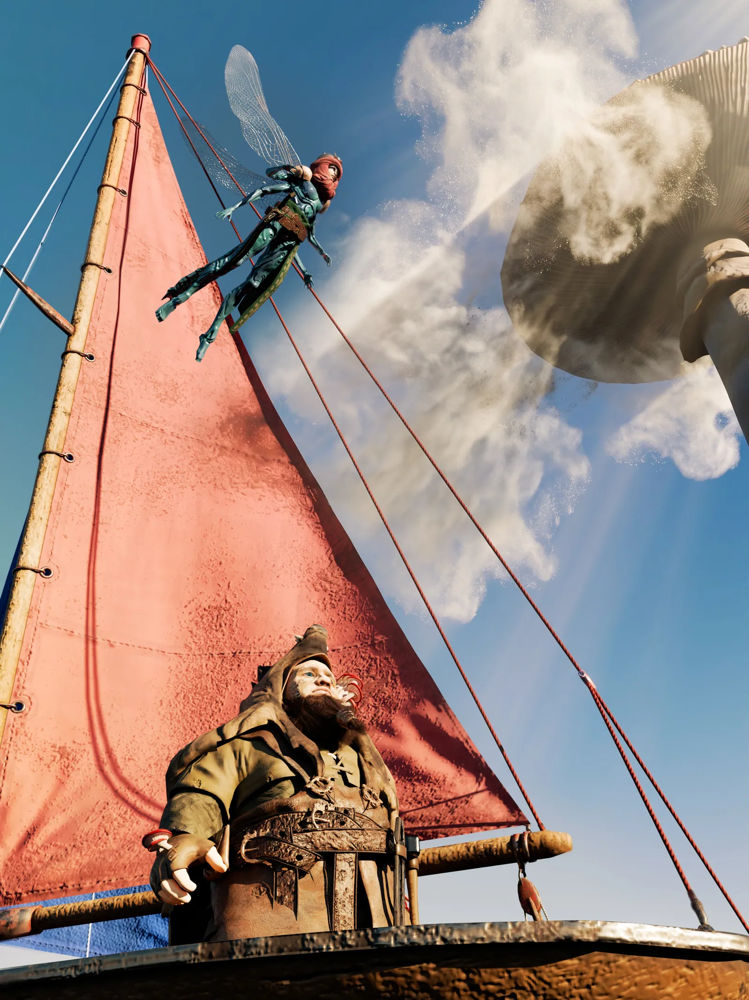
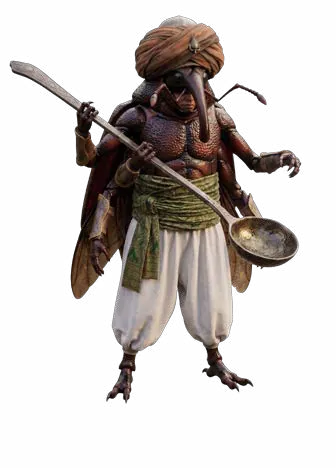
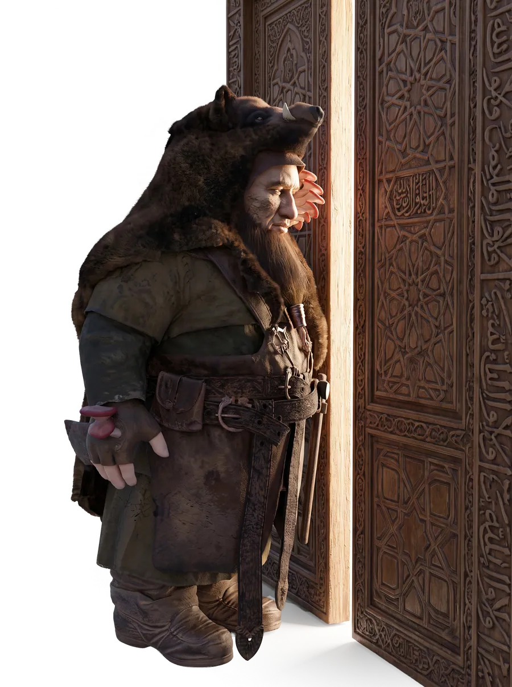
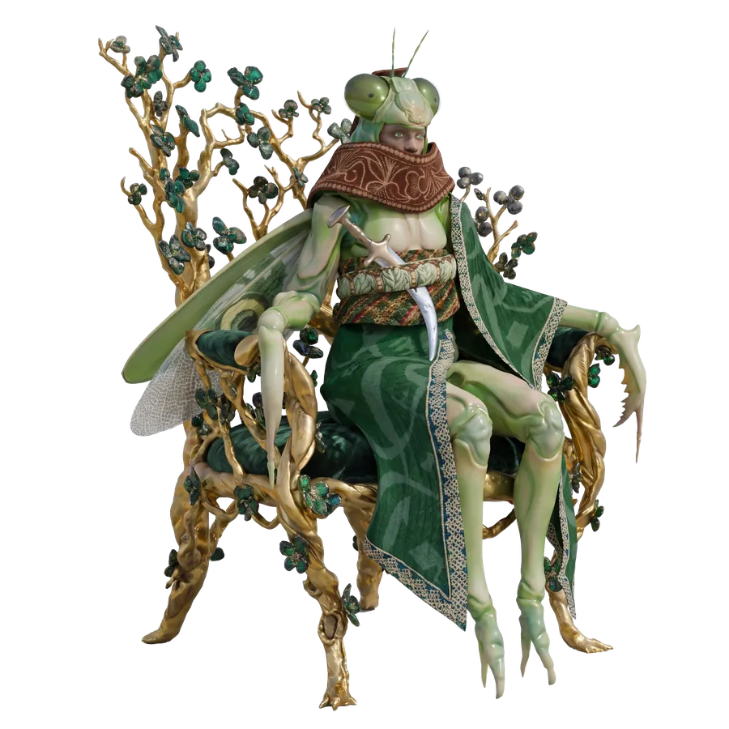
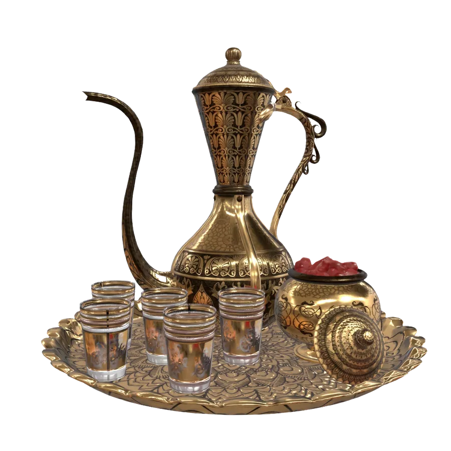
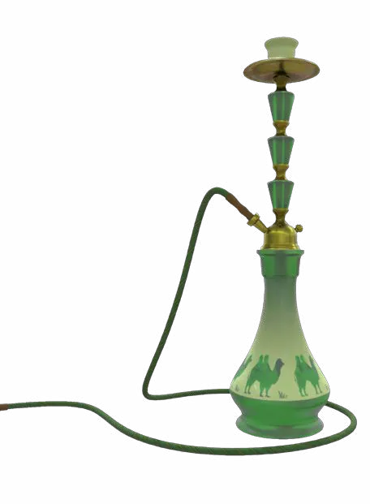

Vòm Trời Khói Trắng
Brann bước đến sát mép hồ. Mặt nước vẫn lặng như một tấm gương vừa được đánh bóng. Thế giới phương Đông vẫn nằm đó, ngay dưới chân cậu, rõ ràng đến mức tưởng như chỉ cần cúi người xuống là có thể chạm vào những mái vòm xanh lam đang phản chiếu ánh hoàng hôn. Brann hít một hơi thật sâu, rồi dè dặt đưa mũi giày về phía trước. Đầu chiếc ủng da khẽ chạm mặt nước. Không có tiếng nước bắn lên. Không có cảm giác lạnh buốt. Chỉ có những vòng sáng tròn đồng tâm lặng lẽ lan đi. Brann giật mình rụt chân lại. Cậu cúi xuống nhìn đôi giày của mình. Rồi lại nhìn mặt hồ. Một lúc lâu sau, cậu mới lấy hết can đảm bước thêm một bước nữa. Lần này, cả bàn chân đặt hẳn lên mặt nước. Mặt hồ cứng cáp như một phiến kính khổng lồ. Brann khẽ dồn trọng lượng. Mặt nước không hề lún xuống.
"…Ta…"
"…đứng được."
Cậu thử thêm một bước. Rồi thêm một bước nữa. Sau lưng, những vòng sáng nối tiếp nhau lan rộng rồi tan dần giữa ánh chiều đỏ nhạt. Brann cúi xuống nhìn dưới chân.
"Thật kỳ lạ…"
"Tựa như…"
"…ta đang đi trên bầu trời."
Cậu chậm rãi bước ra giữa hồ. Càng đi, mặt nước càng trở nên trong suốt. Đến một lúc, Brann dừng lại. Ngay dưới chân cậu, là cả một thế giới. Thoạt đầu, cậu vẫn nghĩ đó chỉ là hình ảnh phản chiếu. Nhưng rồi… Ánh mắt Brann khựng lại.
"…Không."
"Cái cây…"
"…không đúng."
Cây sồi vẫn đứng ở chính giữa. Nhưng dưới tán cây không còn là thảm cỏ xanh quen thuộc, mà là một quảng trường lát đá cẩm thạch trắng ngần. Bộ rễ khổng lồ ôm lấy những bậc thềm bằng đá, vươn xuống những hồ nước trong xanh đang lặng lẽ phản chiếu bầu trời. Phía xa, những mái vòm xanh lam nối tiếp nhau thành từng lớp. Những ngọn tháp thanh mảnh vươn lên giữa ánh chiều. Những cây cầu đá cong mềm bắc qua vô số dòng nước nhỏ. Khắp nơi đều ngập trong sắc vàng dịu của hoàng hôn. Brann bất giác quỳ xuống.
"…Đây…"
"…không phải hình ảnh phản chiếu."
Cậu đưa tay xuống. Đầu ngón tay khẽ chạm mặt hồ. Làn nước mềm đi như một tấm lụa. Bàn tay cậu… Chầm chậm xuyên qua. Brann mở to mắt.
"…!"
Cậu rụt tay lại. Bàn tay vẫn khô ráo. Không một giọt nước. Cậu thử thêm lần nữa. Lần này, cả cánh tay đều chìm xuống dưới. Brann có thể nhìn thấy chính cánh tay mình…đang hiện diện trong quảng trường cẩm thạch của thế giới bên kia. Nhưng phần còn lại của cơ thể… Vẫn đứng nguyên trên mặt hồ.
"…Lạ thật."
Cậu thử bước tiếp. Không được. Hai thế giới chỉ cách nhau một mặt nước mỏng. Nhưng lại như bị ngăn bởi một cánh cửa vô hình. Brann ngoái đầu nhìn về phía bờ.
"Soren!"
Giọng cậu vang vọng giữa mặt hồ. Soren vẫn đứng dưới gốc sồi. Ánh hoàng hôn phủ lên bộ lông vàng nhạt của cô một màu cam ấm áp. Brann cất tiếng.

"Giờ…"
"Ta phải làm gì?"
Soren mỉm cười.
"Cứ tin thôi."
Brann chớp mắt.
"…Tin?"
"Ngả người."
"Thế là đủ."
Brann cúi xuống nhìn mặt hồ. Rồi lại nhìn Soren.
"Cô…"
"…chắc chứ?"
Soren khẽ gật đầu.
"Ừ."
Brann nuốt khan.
"Nếu…"
"…ta rơi thì sao?"
"Thì ngươi sẽ đến nơi mình cần đến."
"…"
"Nếu…"
"…ta không đến được?"
Lần này, Soren im lặng một lúc. Cô nhìn Brann. Ánh mắt hiền hòa như chính mặt hồ lúc hoàng hôn. Rồi khẽ nói.
"Brann."
"Có những cánh cửa…"
"…không mở bằng sức lực."
"…mà bằng lòng tin."
Brann đứng lặng. Gió chiều khẽ lướt qua mặt hồ. Những vòng sóng nhỏ lan ra dưới chân cậu. Cậu nhìn thế giới bên dưới. Rồi quay lại nhìn khu rừng phía sau.
"…Đến đây rồi."
"…Thì tin một lần vậy."
Brann dang hai tay. Chậm rãi ngả người về phía sau. Không nhảy. Không lao xuống. Chỉ đơn giản là… Để mặc cơ thể rơi vào lòng mặt hồ. Khoảnh khắc lưng cậu chạm mặt nước. Thời gian như ngừng lại. Những vòng sáng bỗng lan khắp mặt hồ. Bầu trời. Hoàng hôn. Khu rừng. Tất cả cùng xoay tròn. Không phải Brann đang rơi. Mà chính thế giới đang nhẹ nhàng lật sang một trang khác… Brann mở mắt. Cậu vẫn đứng trên mặt hồ. Chỉ có điều… Đó không còn là mặt hồ của khu rừng nữa. Phía trên đầu, qua lớp nước trong vắt, cậu vẫn nhìn thấy cây sồi cổ thụ. Vẫn nhìn thấy Soren đứng dưới gốc cây. Hai thế giới úp mặt vào nhau. Chỉ cách nhau một mặt hồ mỏng như tấm gương. Brann khẽ giơ tay. Soren cũng mỉm cười gật đầu. Rồi cậu chậm rãi quay người. Trước mặt cậu. Không phải chỉ là một cung điện. Mà là… Cả một thành phố. Được dựng quanh gốc sồi khổng lồ. Bộ rễ của cây len lỏi giữa những quảng trường bằng đá trắng, ôm lấy những hồ nước trong xanh và những khu vườn trải dài bất tận. Dòng nước từ vô số bồn đồng đặt quanh thân cây chảy thành từng tầng nhỏ, róc rách đổ xuống những kênh đào uốn lượn khắp thành phố. Những mái vòm xanh lam phủ kín gạch men óng ánh dưới nắng chiều. Những ban công bằng đá trắng nối với nhau bằng các hành lang mở. Xa hơn nữa. Những ngọn tháp mảnh mai vươn lên khỏi làn khói trắng đang lững lờ trôi giữa các mái nhà. Brann đứng lặng. Đây không giống bất kỳ nơi nào cậu từng đi qua. Không giống khu vườn của Alaric. Không giống thung lũng của Bjorn và Eirik. Cũng chẳng giống thư viện của Eira. Nơi này… Giống như một nền văn minh được sinh ra từ nước, đá, hương thơm và những khoảng thời gian không bao giờ vội vã. Brann cúi xuống nhìn lại mình. Chiếc tạp dề da đã sờn. Đôi ủng vẫn còn vương vài vệt bùn đất từ khu rừng phía trên. Chiếc búa thợ rèn cũ kỹ vẫn lặng lẽ nằm sau lưng. Cậu vô thức phủi nhẹ hai bên áo. Rồi cúi xuống lau sạch đôi giày bằng ống quần. Một cơn gió khẽ lướt qua. Mặt hồ phía sau gợn lên vài vòng sóng nhỏ rồi nhanh chóng trở lại phẳng lặng, như thể cánh cửa giữa hai thế giới vừa lặng lẽ khép lại. Brann hít một hơi thật sâu. Rồi bước xuống cây cầu đá trắng dẫn vào Vương quốc Khói Trắng. Tiếng gót giày khẽ vang trên mặt đá cẩm thạch.

Hai bên cây cầu, nước từ những bồn đồng nhiều tầng không ngừng chảy xuống các hồ nhỏ rồi men theo những rãnh đá uốn lượn khắp khu thủy viên. Xa hơn, những cánh đồng hoa nối tiếp nhau trải dài dưới những mái vòm xanh lam, phủ kín cả khoảng đất quanh gốc sồi bằng vô số sắc màu rực rỡ. Giữa những luống hoa ấy là những cây nấm khổng lồ.
Chúng cao hơn đầu người, tán nấm xòe rộng như những chiếc ô trắng ngà. Từ mặt dưới của từng mũ nấm, những hạt bào tử li ti không ngừng bay lên, nhẹ nhàng hòa vào không khí rồi tạo thành những làn khói trắng mỏng lững lờ trôi giữa các mái vòm. Brann dừng chân. Một hạt bào tử đáp xuống mu bàn tay cậu. Theo phản xạ, cậu định phủi đi. Nhưng ngay khoảnh khắc đầu ngón tay chạm vào. Một cảm giác kỳ lạ bất chợt lan khắp cơ thể. Bao nhiêu mỏi mệt của những ngày băng rừng dường như tan đi trong chốc lát. Lồng ngực cậu bỗng nhẹ bẫng. Khóe môi vô thức khẽ nhếch lên, như thể vừa nhớ lại một kỷ niệm đẹp từ rất lâu rồi. Brann ngẩn người. Cậu nhìn hạt bào tử vừa tan biến trong lòng bàn tay mình.
"Lạ thật…"
Xa xa, vài người hầu đang cẩn thận thu những làn bào tử trắng vào các bình thủy tinh trong suốt. Bên cạnh họ, những chiếc nồi đồng lớn không ngừng tỏa hơi. Một chất lỏng màu hổ phách chậm rãi nhỏ xuống từ những ống chưng cất, được hứng vào những lọ pha lê nhỏ xếp ngay ngắn trên bàn đá. Brann chưa kịp hỏi. Một tiếng cười sảng khoái đã vọng lại từ phía những dãy hành lang. Không chỉ một người. Mà rất nhiều người. Tiếng đàn dây hòa cùng tiếng trống nhỏ và tiếng chuông đồng ngân lên đâu đó giữa các mái vòm. Những người đang ngâm mình trong các hồ khoáng vừa chuyện trò vừa thưởng thức cà phê. Một vài người khác ung dung chơi cờ dưới bóng cây, mặc cho thời gian chậm rãi trôi qua như dòng nước dưới chân họ. Cả Vương quốc Khói Trắng mang đến cho Brann cảm giác như đang sống trong một ngày hội bất tận. Thế nhưng… Khi ánh mắt vô tình lướt qua một luống hoa gần lối đi, cậu khẽ khựng lại. Những người làm vườn vẫn đang cẩn thận tưới nước. Những cánh hoa vẫn nở. Nhưng sắc màu của chúng dường như nhạt hơn những luống phía xa. Không nhiều. Chỉ vừa đủ để một người quen sống cùng cây cối như Brann nhận ra. Cậu tiếp tục bước đi. Đi thêm một đoạn. Cậu lại thấy một vết nứt mảnh chạy dọc theo chân bệ đá của một đài phun nước. Nó nhỏ đến mức gần như chìm hẳn trong những hoa văn chạm khắc. Nếu không cúi nhìn, có lẽ chẳng ai để ý. Brann khẽ đưa tay chạm thử. Mặt đá khô hơn cậu tưởng. Đúng lúc ấy, một giọng nói ôn hòa cất lên phía sau.
"Xin chào ngài."
Brann quay lại. Một chàng trai trẻ đang đứng cách cậu vài bước. Trang phục của anh được giữ gìn gọn gàng đến từng nếp gấp. Chiếc áo choàng màu lam tím phủ ngay ngắn trên vai, không hề có lấy một nếp nhăn. Mọi cử chỉ đều điềm tĩnh, chuẩn xác như đã được cân nhắc từ trước. Đôi mắt sau cặp kính mảnh ánh lên vẻ tỉnh táo. Anh khẽ đặt tay lên ngực, cúi đầu vừa đủ theo đúng lễ nghi.
"Xin tự giới thiệu."
"Ta là Osric."
"Phụ trách việc vận hành của Vương quốc Khói Trắng."
Brann hơi ngẩn người.
"Ngài…"
"Là quản gia?"
Osric khẽ chỉnh lại chiếc găng tay.
"Cũng có thể hiểu như vậy."
"Nhưng danh xưng chính xác hơn…"
"Là một trong sáu lãnh chúa."
Brann lập tức cúi đầu sâu hơn.
"Xin thứ lỗi."
"Ta thất lễ rồi."
Osric khẽ lắc đầu.
"Không sao."
"Ngài không phải người đầu tiên nhầm."
Rồi anh nhìn xuống đôi ủng còn dính bùn của Brann. Im lặng vài giây. Brann cũng nhìn theo.
"Xin lỗi."
"Ta sẽ lau sạch ngay."
Osric bật cười rất khẽ.
"Ta chỉ đang nghĩ…"
"Nếu để ngài Bọ Hung nhìn thấy…"
"Ông ấy sẽ hỏi liệu ngài có bán lại số bùn đó không."
Brann chớp mắt.
"Bùn?"
"Ông ấy luôn cho rằng…"
"Thứ gì cũng có giá của nó."
Lần đầu tiên từ khi bước vào thành phố. Brann khẽ cười. Chỉ một chút. Nhưng đủ để bầu không khí bớt xa lạ.

"Được gặp ngài là vinh hạnh của ta, Ngài Brann."
Osric mỉm cười.
"Năm vị lãnh chúa và Quân vương Sigurd hiện vẫn đang dùng cà phê."
"Nếu ngài không phiền, xin mời đi theo ta."
Brann khẽ gật đầu.
"Cảm phiền ngài dẫn đường."
Hai người chậm rãi bước qua khu thủy viên. Osric vừa đi vừa giới thiệu từng nơi với sự ngắn gọn và chuẩn xác của một người đã quá quen thuộc với mọi ngóc ngách trong cung điện.
"Phía bên phải là Vườn Phấn Hoa."
"Toàn bộ hương liệu của Vương quốc đều được điều chế từ nơi đó."
"Phía trước là hồ khoáng trung tâm."
"Nguồn nước của toàn bộ Vương quốc đều bắt đầu từ mạch suối dưới lòng hồ."
Brann đưa mắt nhìn theo. Mặt hồ rộng và trong đến mức có thể nhìn thấy những đồng xu được người ta thả xuống từ rất lâu vẫn còn nằm dưới đáy. Những dòng nước liên tục dâng lên từ lòng đất rồi tỏa đi khắp các kênh dẫn. Khung cảnh ấy khiến cậu không khỏi thầm ngưỡng mộ. Nhưng cũng chính lúc ấy, Brann để ý thấy trên thành hồ vẫn còn in một vệt khoáng trắng mờ, cao hơn mặt nước hiện tại chừng một gang tay. Nếu không nhìn kỹ, nó chỉ giống như một đường vân đá tự nhiên. Osric cũng nhìn theo ánh mắt của cậu. Anh mỉm cười.
"Mực nước gần đây có hạ đôi chút."
"Đội thủy viên vẫn đang theo dõi."
"Nhiều năm qua vẫn thường như vậy."
Brann khẽ gật đầu. Cậu không hỏi thêm. Chỉ lặng lẽ ghi nhớ điều ấy trong lòng. Ở phía xa, những làn khói trắng từ các cây nấm vẫn không ngừng bay lên. Dưới ánh hoàng hôn, chúng đẹp đến mức tưởng như cả bầu trời đang được phủ bởi một tấm voan mỏng. Không ai trong Vương quốc ngẩng đầu nhìn chúng nữa. Có lẽ… Khung cảnh ấy đã trở nên quá quen thuộc với tất cả mọi người. Chỉ có Brann. Vẫn vô thức ngoái nhìn thêm một lần nữa trước khi bước theo Osric vào sâu bên trong cung điện. Hai người tiếp tục bước qua thêm vài dãy hành lang. Càng tiến sâu vào trung tâm cung điện, những làn khói trắng trong không khí càng trở nên dày hơn. Chúng không gây ngột ngạt, trái lại còn mang theo một mùi hương dịu nhẹ khiến bước chân người ta bất giác chậm lại. Brann nhận ra. Ở nơi đây, dường như không ai bao giờ phải vội. Một nhóm người hầu lặng lẽ đi ngang qua. Trên khay của họ là những tách cà phê còn nghi ngút khói cùng vài chiếc tẩu shisha được chế tác bằng đồng và pha lê. Một nhóm khác cẩn thận bưng những lọ tinh dầu màu hổ phách vừa chưng cất từ bào tử nấm, bước về phía khu điện chính. Osric vừa đi vừa giải thích.
"Loại tinh dầu này là niềm tự hào của Vương quốc Khói Trắng."
"Nó được chiết xuất từ bào tử của những cây nấm cổ."
"Chỉ cần một lượng rất nhỏ cũng đủ giúp tinh thần thư thái và đầu óc minh mẫn."
Brann khẽ gật đầu. Cậu chợt nhớ tới cảm giác hân hoan vừa thoáng qua khi bào tử chạm vào tay mình. Quả thật… Đó là một cảm giác rất dễ chịu. Đi hết dãy hành lang lát đá trắng. Một khoảng thủy viên rộng lớn dần hiện ra. Chính giữa là hồ nước khoáng bốc hơi nghi ngút. Chung quanh hồ, những bụi hồng được cắt tỉa ngay ngắn, xen giữa là những cây nấm khổng lồ đang không ngừng tỏa bào tử lên bầu trời. Brann vô thức dừng lại. Những cây nấm ấy khỏe đến lạ. Ngay cả những cây cổ thụ cạnh bên cũng không xanh tốt bằng chúng. Osric nhận ra ánh mắt của cậu. Anh mỉm cười.
"Đó là những cây nấm đầu tiên được gieo trồng tại Vương quốc."
"Chúng đã ở đây rất lâu rồi."
"Nghe nói…"
Anh dừng lại một chút như đang nhớ về một câu chuyện cũ.
"…từ nhiều năm trước, có một vị lữ khách ghé qua nơi này."
"Ông ta khoác một chiếc áo choàng đen đã sờn cũ."
"Chiếc mũ trùm đầu nhọn che khuất gần hết gương mặt."
"Trên tay chỉ mang theo một cây gậy gỗ và một chiếc túi vải."
"Không ai biết ông đến từ đâu."
"Cũng không ai biết tên."
"Trước khi rời đi…"
"Ông ấy để lại cho các lãnh chúa vài bào tử nấm."
"Rồi biến mất."
Brann chăm chú lắng nghe.
"Các lãnh chúa đã trồng chúng sao?"
"Đúng vậy."
"Ban đầu chỉ là vài cây nhỏ."
"Về sau chúng phát triển rất nhanh."
"Ngoài giá trị dược liệu, chúng còn đem lại cảm giác thư thái hiếm có."

"Nhờ đó mà Vương quốc Khói Trắng dần nổi tiếng khắp nơi."
Osric mỉm cười rất tự nhiên. Nhưng rồi ánh mắt anh khẽ lướt qua những cây nấm.
"Chỉ có điều…"
"Những năm gần đây."
"Chúng phát triển nhanh hơn trước rất nhiều."
Brann quay sang.
"Có ảnh hưởng gì không?"
Osric khẽ lắc đầu.
"Các học giả vẫn đang nghiên cứu."
"Hiện tại chưa có kết luận."
Anh nói rất bình thản. Giống như đó chỉ là một việc nhỏ. Brann cũng không hỏi thêm. Thế nhưng, khi đi ngang qua một cây nấm khổng lồ, cậu khẽ cúi xuống. Dưới lớp cỏ xanh. Có vài sợi nấm trắng rất mảnh đang len lỏi giữa lòng đất. Chúng bám quanh phần rễ của một bụi hoa nhỏ. Những người làm vườn đi ngang qua vẫn chăm chú cắt tỉa. Không ai để ý đến chúng. Brann định cúi xuống nhìn kỹ hơn. Nhưng Osric đã dừng lại trước một cánh cửa gỗ lớn. Anh nhẹ nhàng chỉnh lại nếp áo. Rồi quay sang Brann.
"Các lãnh chúa vẫn đang tiếp khách."
"Xin ngài vui lòng chờ ít phút."
Anh đưa tay mời về phía một khoảng hiên nhìn ra thủy viên. Một bộ trường kỷ thấp cùng bàn cà phê đã được chuẩn bị sẵn từ trước.
"Nếu cần thêm điều gì."
"Xin ngài cứ báo lại với người hầu."
"Ta sẽ quay lại ngay khi các lãnh chúa dùng cà phê xong."
Brann hơi cúi đầu.
"Đa tạ ngài."
Osric cũng cúi đầu đáp lễ. Rồi lặng lẽ rời đi. Khoảng hiên nhanh chóng trở về vẻ yên tĩnh vốn có. Brann ngồi xuống. Trước mặt cậu là mặt hồ đang phản chiếu sắc trời cuối chiều. Phía sau cánh cửa gỗ vọng ra những tiếng cười mơ hồ. Tiếng quân cờ đặt xuống mặt bàn. Tiếng đàn oud trầm ấm. Và cả những câu chuyện đứt quãng mà Brann không nghe rõ. Cậu lặng lẽ nhấp một ngụm cà phê. Rồi bất giác ngẩng đầu. Một cơn gió khẽ lướt qua hành lang. Hai cánh cửa gỗ vốn đã khép kín… Bỗng hé ra một khoảng rất nhỏ. Brann khẽ nghiêng đầu. Cậu biết mình không nên nhìn. Nhưng khe cửa chỉ mở vừa đủ để lộ ra một phần căn phòng phía trong, như thể chính cơn gió vô tình kéo tấm rèm sang một bên. Brann chần chừ vài giây. Rồi vẫn đứng dậy. Cậu không bước sát đến cửa, chỉ tiến thêm một đoạn vừa đủ để nhìn qua khoảng hở ấy. Và rồi… Cậu gần như quên cả chớp mắt. Bên trong là một gian phòng tắm rộng bằng cẩm thạch trắng, mái vòm cao phủ kín những họa tiết xanh lam và vàng đồng. Hơi nước bốc lên từ hồ khoáng giữa phòng, hòa cùng những làn khói shisha thành một lớp màn mỏng lững lờ dưới trần. Âm nhạc vẫn đang vang lên. Tiếng đàn oud dẫn giai điệu chính, phía sau là tiếng trống nhỏ và chuông đồng đệm nhịp. Giữa những khoảng nghỉ, tiếng cười của các lãnh chúa lại vang lên, thoải mái đến mức Brann có cảm giác mình đang nhìn vào một thế giới hoàn toàn khác. Ngay chính giữa hồ. Sigurd đang ngồi tựa vào thành bể. Ông không phải người nói nhiều nhất. Cũng không phải người cười lớn nhất. Nhưng chỉ cần nhìn qua, Brann vẫn lập tức nhận ra ai là người đứng đầu. Một bàn cờ gỗ mun được đặt trên chiếc bàn thấp nổi giữa mặt nước. Sigurd cầm một quân cờ trong tay, chậm rãi xoay giữa hai đầu ngón tay. Đối diện ông là Bọ Hung. Ông này có vẻ chẳng thể để một nước cờ chỉ là một nước cờ.

"Nếu ta đổi quân này lấy hai quân của ngài…"
"Thì xét cho cùng, ta vẫn lời."
Sigurd không đáp ngay. Ông chỉ đặt quân cờ xuống.
Cạch.
Bọ Hung nhìn bàn cờ. Rồi bật cười.
"Xem ra ta vừa tự bán mình với giá hơi rẻ."
Bướm Đêm đang ngồi bên cạnh hồ, một tay giữ cuốn sách mở trên đầu gối, nghe vậy mới khẽ ngẩng lên.
"Ngài vẫn còn khá hơn vị thương nhân trong Biên niên ký Herat."
Bọ Hung quay sang.
"Ông ấy mất bao nhiêu?"
"Cả đoàn lạc đà."
Bọ Hung lắc đầu.
"Lần nào cũng thế."
"Biết là bẫy…"
"…mà vẫn thấy tiếc nếu không nhảy."
Chuồn Chuồn vừa đi ngang nghe thấy liền góp chuyện.
"Hay từ mai ngài Sigurd cứ đặt một túi tiền cạnh bàn cờ."
"Ngài Bọ Hung sẽ tự đi vào thế bí."
Bọ Hung đặt tay lên ngực.
"Thật đau lòng."
"Các vị hiểu ta quá."
Sigurd cũng khẽ cong khóe môi. Không ai trong số họ cười ầm ĩ đến mức mất kiểm soát. Nhưng trong cách nói chuyện luôn có một sự thoải mái rất riêng, như thể mọi người đã quen với việc châm chọc nhau bằng những câu chỉ cần lệch một chút cũng đủ thành xúc phạm, nhưng ở đây lại trở thành thú vui. Ở phía ngoài hồ. Chuồn Chuồn gần như không chịu ngồi yên. Ông đang cùng hai cận vệ trẻ chơi một trò dùng gậy gỗ đánh một quả bóng nhỏ qua những vòng đồng treo thấp. Quả bóng vừa bật khỏi mặt đá. Chuồn Chuồn đã lao tới. Cây gậy trong tay xoay một vòng.
Cạch!
Quả bóng bay xuyên qua chiếc vòng gần nhất. Một cận vệ khẽ cúi đầu.
"Một điểm cho ngài."
Chuồn Chuồn cười.
"Ta đang nghĩ nên tính hai điểm."
Người cận vệ cũng cười.
"Nếu ngài tự viết luật thì quả thật rất khó thắng ngài."
"Ta thích cách ngươi suy nghĩ."
Ở góc bên kia. Mối đang ngồi cạnh một chiếc bàn thấp. Trước mặt ông là vài cuốn sổ kiểm kê, những thẻ nhỏ bằng đồng và hai người hầu đang lần lượt báo cáo. Một chiếc bình hương được đặt hơi lệch khỏi mép bàn. Mối nhìn thấy. Ông không nói gì. Chỉ khẽ hất cằm. Người hầu lập tức chỉnh lại. Một chiếc khay khác đặt sai vị trí. Mối khẽ đưa ngón tay sang trái. Người hầu lại hiểu ý. Tất cả diễn ra gọn đến mức gần như không làm gián đoạn cuộc trò chuyện. Còn Cánh Cam thì ngồi gần cuối hồ. Cây đàn oud đặt trên đùi. Phía sau ông là ba nhạc công. Một người chơi trống. Một người rung chuông. Một người giữ nhịp bằng đôi phách gỗ. Cánh Cam chỉ cần nghiêng đầu một chút. Cả nhóm lập tức đổi nhịp. Chậm hơn. Mềm hơn. Rồi lại dần nâng lên theo tiếng cười trong phòng. Brann đứng lặng. Cậu chưa từng thấy ai sống như vậy. Những người này không giống những vị quý tộc mà cậu từng tưởng tượng. Họ không ngồi thẳng lưng trên những chiếc ngai lạnh lẽo. Không giữ vẻ mặt nghiêm nghị để chứng minh quyền lực. Họ tắm. Uống cà phê. Hút shisha. Chơi cờ. Đọc sách. Chơi nhạc. Trò chuyện. Và dường như tận hưởng từng khoảnh khắc mà không hề cảm thấy có lỗi vì điều đó. Brann khẽ cúi xuống nhìn bàn tay mình. Những vết chai ở lòng bàn tay. Những vết bỏng cũ ở cổ tay. Những đường nấm trắng xám vẫn đang âm thầm lan dưới lớp da. Cậu chợt thấy mình thật xa lạ với nơi này. Không phải vì họ giàu. Cũng không phải vì cậu nghèo. Mà bởi cách họ sống. Dường như hoàn toàn khác với cậu. Brann đã quen với việc thức dậy khi trời còn tối. Quen với việc luôn phải nghĩ xem hôm nay cần sửa gì, làm gì, phải đi đâu. Ngay cả khi được nghỉ. Cậu cũng chẳng thật sự biết phải nghỉ như thế nào. Còn những người phía sau cánh cửa kia… Họ cười như thể chẳng có điều gì cần phải dè chừng. Tận hưởng như thể ngày mai chắc chắn vẫn sẽ tốt đẹp. Brann khẽ siết tay. Không hiểu vì sao. Cậu thấy mình có chút… ngượng ngùng. Như thể sự nghiêm túc của chính mình bỗng trở nên vụng về giữa một nơi quá đỗi hân hoan. Đúng lúc ấy. Bọ Hung nâng chiếc tẩu shisha lên. Một người hầu lập tức bước tới, nhỏ vài giọt tinh dầu màu hổ phách vào phần nước bên dưới. Làn khói sau đó dày hơn hẳn. Bọ Hung hít một hơi. Rồi chậm rãi thở ra. Một làn khói trắng dài bay lên, uốn quanh mái vòm trước khi tan vào không khí. Chuồn Chuồn nhìn sang.
"Ngài dùng loại mới à?"
Bọ Hung cười.
"Mẻ hôm nay."
"Ngọt hơn."
Bướm Đêm khẽ khép sách.
"Ngọt hơn không có nghĩa là tốt hơn."
Bọ Hung nghiêng đầu.
"Ông đang nói về tinh dầu hay về cuộc đời?"
Bướm Đêm mỉm cười.
"Tùy ngài muốn nghe theo cách nào."
Lần này, ngay cả Sigurd cũng bật cười. Brann bất giác mỉm cười theo. Nhưng ngay khi nhận ra mình vừa cười. Cậu lại khựng lại một chút. Cảm giác ấy rất giống lúc bào tử nấm chạm vào tay cậu ngoài quảng trường. Một niềm vui nhỏ. Đến quá nhanh. Và cũng quá dễ dàng. Brann đang định lùi lại thì nghe thấy tiếng bước chân phía sau. Cậu giật mình quay lại. Osric đã trở về. Người quản gia trẻ vẫn giữ vẻ chỉn chu như lúc đầu, nhưng ánh mắt thoáng dừng ở khe cửa trước khi nhìn sang Brann. Anh không trách. Cũng không tỏ vẻ khó chịu. Chỉ khẽ cúi đầu.
"Xin thứ lỗi vì đã để ngài phải chờ."
"Quân vương Sigurd đã có thể tiếp ngài."
Brann hơi lúng túng.
"Ta…"
Cậu vô thức nhìn lại cánh cửa.
"Có làm phiền các ngài ấy không?"
Osric mỉm cười.
"Nếu có, ta đã không đến mời ngài."
Brann khẽ gật đầu. Rồi hít một hơi thật sâu. Osric bước tới. Hai tay đặt lên tay nắm bằng đồng. Cánh cửa từ từ mở rộng. Tiếng đàn dịu xuống. Những cuộc trò chuyện cũng chậm lại. Sáu vị lãnh chúa đồng loạt hướng mắt về phía cửa. Osric hơi nghiêng người.
"Thưa Quân vương."
"Thưa các ngài."
"Vị khách đến từ vùng đất băng giá đã tới."
Brann đứng thẳng người. Rồi cúi đầu thật thấp.
"Kính chào Quân vương Sigurd."
"Kính chào các vị lãnh chúa."
"Ta là Brann, một người thợ rèn đến từ vùng đất băng giá."
"Xin thứ lỗi vì đã đường đột đến làm phiền."
Không ai đáp ngay. Sự im lặng chỉ kéo dài trong một thoáng. Rồi Sigurd đặt quân cờ xuống bàn. Ông nhìn Brann. Khóe môi vẫn còn phảng phất nụ cười của câu chuyện ban nãy.
"Ngẩng đầu lên đi."
Brann chậm rãi làm theo. Sigurd khẽ đưa tay về phía chiếc đệm được đặt sẵn gần hồ.
"Ngồi xuống."
"Ngươi đã đi xa rồi."
"Ở đây…"
"Không cần đứng mà nói chuyện."
Brann hơi chần chừ. Rồi cúi đầu lần nữa.
"Đa tạ ngài."
Cậu bước tới chỗ ngồi. Và lần đầu tiên. Thật sự bước vào thế giới của sáu vị Lãnh chúa Bọ. Brann ngồi xuống chiếc đệm thấp cạnh hồ. Khoảng cách giữa cậu và sáu vị lãnh chúa không quá xa, nhưng vẫn đủ để nhắc cậu nhớ mình đang ở vị trí nào. Phía trước là Quân vương Sigurd cùng những người đứng đầu Vương quốc Khói Trắng. Còn cậu chỉ là một người thợ rèn đến từ Yggdrasil, mang theo chiếc búa cũ và một căn bệnh chưa ai gọi tên được. Một người hầu bước tới, đặt trước mặt Brann một tách cà phê nhỏ bằng sứ trắng. Brann khẽ cúi đầu cảm ơn. Cậu vừa nâng tách lên thì Bọ Hung đã nhìn sang.

"Nghe nói ngươi vượt qua mặt hồ bằng cách ngã ngửa xuống."
Brann khựng lại.
"Ta…"
"Có thể nói là vậy."
Khóe môi Bọ Hung cong lên.
"Một cách vào cửa khá… tiết kiệm."
Chuồn Chuồn bật cười.
"Ít nhất không mất phí cầu đường."
Bọ Hung quay sang anh.
"Nếu để ngươi thu phí, có lẽ khách đã quay về từ bờ bên kia."
"Ta chỉ thu của người bay chậm."
"Vậy ngươi sẽ chẳng kiếm được đồng nào."
Tiếng cười khẽ vang quanh hồ. Brann cũng mỉm cười theo, dù vẫn chưa hoàn toàn biết nên phản ứng thế nào. Những câu đùa của họ không ồn ào hay suồng sã. Chúng giống những mũi kim nhỏ, chạm nhau vừa đủ để cả căn phòng vui lên nhưng không ai mất đi sự chừng mực. Bướm Đêm khép cuốn sách đang mở trên đầu gối.
"Đừng làm vị khách của chúng ta sợ."
Bọ Hung nghiêng đầu.
"Ta đang giúp cậu ấy thư giãn."
"Ngài luôn nói vậy trước khi khiến ai đó phải trả thêm tiền."
Lần này, Brann nghe rõ tiếng cười của Cánh Cam ở phía cuối hồ. Sigurd vẫn không nói gì. Ông chỉ nhấp một ngụm cà phê, để mặc những người còn lại trò chuyện thêm vài câu trước khi ánh mắt chậm rãi quay về phía Brann. Cả căn phòng tự nhiên dịu xuống. Không ai bảo ai. Brann lập tức nhận ra. Đây mới là lúc cuộc gặp thật sự bắt đầu. Sigurd đặt tách cà phê xuống.
"Soren nói ngươi đến đây để tìm cách chữa bệnh."
"Vâng, thưa Quân vương."
"Hãy kể từ đầu."
Brann khẽ gật đầu. Cậu hít một hơi thật sâu rồi bắt đầu kể. Không ai cắt ngang. Ngay cả Bọ Hung cũng thôi nghịch quân cờ trong tay. Bướm Đêm lắng nghe với vẻ chăm chú khác hẳn lúc đọc sách. Mối đặt hẳn cuốn sổ sang một bên. Khi Brann nói đến những dấu nấm đã xuất hiện trên chính cơ thể mình, cậu dừng lại. Rồi chậm rãi kéo tay áo lên. Những đường trắng xám chạy dọc dưới lớp da cẳng tay đã dài hơn trước. Chúng mảnh như rễ cây. Nhưng không còn chỉ nằm ở một chỗ. Một vài nhánh đã bắt đầu bò lên gần khuỷu tay. Không khí quanh hồ lắng xuống. Chuồn Chuồn khẽ hạ cây gậy đang xoay trong tay. Cánh Cam cũng thôi gảy đàn. Bướm Đêm đứng dậy trước. Ông bước lại gần hơn, nhưng vẫn giữ một khoảng cách lịch sự.
"Ngươi đã thử chạm vào chúng chưa?"
"Có."
"Đau không?"
Brann khẽ lắc đầu.
"Không hẳn."
"Chỉ có lúc chúng lan thêm…"
Cậu dừng lại một chút.
"Ta cảm thấy lạnh."
Bướm Đêm hơi cau mày. Ông nhìn những đường nấm thật lâu. Rồi quay sang Sigurd.
"Không giống loại chúng ta đang trồng."
Bọ Hung cũng rời khỏi bàn cờ.
"Không giống chút nào."
Mối bước đến gần hơn, ánh mắt rà qua từng nhánh trắng xám.
"Màu sắc khác."
"Cấu trúc cũng khác."
Chuồn Chuồn khẽ nghiêng đầu.
"Thế còn phản ứng?"
Bướm Đêm nhìn Brann.
"Khi ngươi chạm vào bào tử ngoài vườn…"
"Ngươi cảm thấy gì?"
Brann hơi bất ngờ.
"Các ngài biết sao?"
Bọ Hung bật cười.
"Khách mới đến đây thường đứng nhìn nấm lâu hơn nhìn cung điện."
Mối bình thản bổ sung.
"Và ngươi cũng không phải người đầu tiên chạm thử."
Brann khẽ cúi đầu.
"Ta thấy…"
Cậu tìm cách diễn tả.
"Nhẹ đi."
"Không phải cơ thể."
"Mà giống như…"
"Có thứ gì trong lòng bỗng được tháo ra."
Bọ Hung mỉm cười.
"Vậy là đúng rồi."
Ông khẽ nâng chiếc tẩu shisha bên cạnh.
"Đó chính là lý do thứ này tồn tại."
Brann nhìn những làn khói trắng chậm rãi bay lên. Bướm Đêm lên tiếng.
"Nấm của Vương quốc Khói Trắng không chữa bệnh."
"Nó tác động lên cảm giác."
"Giúp tinh thần thư giãn, khuếch đại những cảm xúc dễ chịu và làm những ký ức nặng nề trở nên xa hơn trong một thời gian."
Cánh Cam khẽ mỉm cười.
"Nói theo cách ít sách vở hơn…"
"Nó khiến một ngày tồi tệ dễ chịu hơn một chút."
Bướm Đêm nhìn sang ông.
"Ta vừa nói đúng như vậy."
"Ngài dùng nhiều chữ hơn."
Một tiếng cười nhỏ lại vang lên. Brann cũng cười theo. Nhưng khi cúi nhìn cánh tay mình, nụ cười nhanh chóng nhạt đi.
"Vậy…"
"Loại nấm của ta không giống?"
Lần này, không ai vội trả lời. Sigurd nhìn cánh tay Brann rất lâu. Ông đặt một quân cờ trong tay xuống bàn.
"Không giống."
Brann im lặng. Dù đã chuẩn bị tinh thần cho câu trả lời ấy, cậu vẫn cảm thấy lòng mình chùng xuống. Bọ Hung nhìn cậu một lúc rồi thôi cười.
"Nhưng khác…"
"Không có nghĩa là chúng ta không thể tìm hiểu."
Bướm Đêm gật đầu.
"Chúng ta biết rất nhiều về nấm."
"Nhưng phần lớn là về loại đang sống ở đây."
"Loại của ngươi…"
Ông nhìn lại những vệt trắng xám.
"Ta chưa từng thấy."
Mối khẽ đan hai tay trước bụng.
"Nếu muốn hiểu nó, chúng ta cần quan sát trong một khoảng thời gian."
Brann ngẩng lên.
"Ý ngài là…"
Sigurd đáp thay.
"Ở lại."
Brann khựng lại. Sigurd vẫn giữ giọng bình thản.
"Vài ngày."
"Đủ để Bướm Đêm xem lại thư tịch."
"Đủ để Mối đối chiếu những ghi chép cũ."
"Và đủ để chúng ta biết thứ trên tay ngươi có phản ứng thế nào với bào tử ở đây."
Brann cúi đầu.
"Ta rất biết ơn."
Bọ Hung khẽ nhướng mày.
"Đừng cảm ơn sớm."
"Chúng ta còn chưa làm được gì."
Sigurd liếc sang ông.
"Ít nhất lần này ông nói đúng."
Bọ Hung đặt tay lên ngực.
"Ta sẽ coi đó là lời khen."
Khóe môi Sigurd khẽ cong lên. Brann nhìn họ. Không hiểu vì sao. Sự căng thẳng trong lòng cậu nhẹ đi đôi chút. Những vị lãnh chúa này quả thật khác xa những gì cậu từng tưởng tượng. Họ không lạnh lùng. Cũng không hề coi thường cậu. Nhưng điều đó lại khiến Brann cảm thấy một khoảng cách khác rõ ràng hơn. Họ quá tự nhiên với thế giới này. Quá quen với cách trò chuyện. Quá quen với những thú vui, nghi thức và nhịp sống nơi đây. Còn Brann vẫn phải suy nghĩ xem nên đặt tay ở đâu, nên trả lời thế nào, nên cười vào lúc nào. Ngay cả khi được chào đón. Cậu vẫn chưa thật sự biết phải đứng ở đâu giữa họ. Sigurd dường như nhận ra sự im lặng ấy. Ông không hỏi. Chỉ quay sang Osric.
"Sắp xếp phòng cho Brann."
Osric cúi đầu.
"Vâng, thưa Quân vương."
Sigurd tiếp tục.
"Ngày mai, đưa cậu ấy đến Vườn Phấn Hoa trước."
Mối hơi ngẩng đầu.
"Ngài muốn bắt đầu từ đó?"
"Ừ."
Sigurd nhìn Brann.
"Muốn hiểu nấm của ngươi…"
"Trước hết, chúng ta phải để ngươi hiểu nấm của chúng ta."
Bọ Hung khẽ cười.
"Và nếu đã ở lại Vương quốc Khói Trắng…"
"Ngươi cũng nên thử sống như người ở đây một chút."
Chuồn Chuồn lập tức tiếp lời.
"Ta tán thành."
"Ngày mai ta có một buổi luyện tập."
Mối nhìn sang.
"Đừng khiến khách bị thương."
"Ta chưa nói sẽ cho cậu ấy đấu."
"Ngài đang cười."
"Ta lúc nào chẳng cười."
Bọ Hung chậm rãi nâng tách cà phê.
"Đó mới là điều đáng lo."
Tiếng cười lại vang lên quanh hồ. Brann cũng mỉm cười. Lần này tự nhiên hơn một chút. Cậu không biết rằng lời mời rất đơn giản ấy sẽ khiến những ngày tiếp theo trở nên khó khăn hơn cậu tưởng. Bởi để hiểu những cây nấm của Vương quốc Khói Trắng, Brann sẽ phải thử bước vào chính cách sống của loài bọ. Và càng cố gắng giống họ… Cậu sẽ càng nhận ra mình khác họ đến mức nào. Buổi trò chuyện kéo dài thêm không lâu. Các lãnh chúa không hỏi Brann thêm về căn bệnh nữa. Thay vào đó. Câu chuyện dần chuyển sang những điều bình thường hơn. Bọ Hung muốn biết ở vùng đất băng giá xa xôi, người ta đổi sắt lấy gì. Chuồn Chuồn tò mò không hiểu vì sao giữa tuyết lại có thể săn bắn. Cánh Cam thì hỏi ở nơi Brann sống có bài hát nào dành cho mùa đông hay không. Ngay cả Bướm Đêm cũng khép cuốn sách lại để lắng nghe. Brann trả lời từng câu hỏi một. Ban đầu còn dè dặt. Nhưng rồi dần dần, cậu cũng kể nhiều hơn. Về căn nhà nhỏ hình vỏ ốc nằm bên triền băng. Về những đêm tuyết phủ kín cửa sổ. Về chiếc lò rèn cũ mà cậu đã tự tay sửa đi sửa lại không biết bao nhiêu lần. Về việc mùa đông kéo dài đến mức có những ngày cậu không nhìn thấy mặt trời. Chuồn Chuồn tròn mắt.
"Vậy…"
"Các ngươi giải trí bằng cách nào?"
Brann suy nghĩ một lúc.
"Ta chẻ củi."
Chuồn Chuồn chớp mắt.
"Sau đó?"
"Lại chẻ tiếp."
Cả căn phòng bỗng bật cười. Bọ Hung chống tay lên trán.
"Không trách được."
"Nếu là ta…"
"Chắc ta cũng mắc bệnh mất."
Brann hơi đỏ mặt.
"Ở đó…"
"Mọi người đều sống như vậy."
Bọ Hung nhìn cậu. Rồi khẽ lắc đầu.
"Thảo nào."
"Ngươi nghiêm túc quá."
Brann định giải thích. Nhưng rồi lại thôi. Có lẽ… Ông ấy cũng không nói sai. Đúng lúc ấy. Một người hầu bước vào. Anh khom người hành lễ.
"Thưa Quân vương."
"Đội làm vườn vừa gửi báo cáo."
Osric nhận lấy cuộn giấy. Mở ra. Đọc rất nhanh. Rồi đặt xuống. Bọ Hung nhìn sang.
"Lại chuyện hoa héo?"
Osric khẽ gật đầu.
"Vẫn khu vườn phía Tây."
"Sản lượng phấn hoa giảm thêm."
Chuồn Chuồn chống cằm.
"Ta vừa ghé qua sáng nay."
"Trông vẫn đẹp mà."
"Bề ngoài không thay đổi nhiều."
Osric đáp.
"Nhưng số hoa nở đúng kỳ đã giảm."
Bọ Hung nhấp một ngụm cà phê.
"Tăng thêm người chăm."
Osric khẽ ghi vào sổ.
"Đã tăng."
"Vậy tăng phân bón."
"Đã thử."
"Đổi giống."
"Cũng đã thử."
Bọ Hung nhún vai.
"Vậy cứ thử tiếp."
Không ai phản đối. Dường như chuyện ấy đã được nhắc đến nhiều lần. Đến mức chẳng còn ai cảm thấy bất ngờ nữa. Brann lặng lẽ nghe. Cậu không hiểu nhiều về hoa. Nên cũng không lên tiếng. Một lát sau. Lại có thêm một người hầu khác bước vào.
"Thưa ngài Osric."
"Đội bảo trì báo…"
"Mực nước hồ khoáng phía Đông giảm thêm một thước."
Osric ghi tiếp vào cuốn sổ.
"Đã cử người kiểm tra nguồn chưa?"
"Rồi ạ."
"Kết quả?"
"Chưa phát hiện bất thường."
Osric gật đầu.
"Tiếp tục theo dõi."
Người hầu cúi đầu lui ra. Cả quá trình chỉ diễn ra trong vài chục nhịp thở. Không ai tỏ ra lo lắng. Như thể những báo cáo như vậy vốn đã trở thành chuyện thường ngày. Chỉ có Brann. Không hiểu sao. Lại nhớ đến những lời Eira từng nói.
"Đôi khi…"
"Điều đáng sợ nhất…"
"…không phải là thứ thay đổi quá nhanh."
"Mà là thứ thay đổi chậm đến mức…"
"…không còn ai nhận ra nó đang thay đổi."
Brann vô thức nhìn ra ngoài cửa sổ. Ở phía xa. Những cây nấm khổng lồ vẫn lặng lẽ tỏa bào tử lên bầu trời. Dưới ánh hoàng hôn. Chúng vẫn xanh tốt. Không khác gì lúc cậu vừa đặt chân đến. Trong khi đó. Một người làm vườn đang cặm cụi thay những khóm hoa vừa héo bằng những cây mới. Hai khung cảnh ấy. Vô tình nằm cạnh nhau. Nhưng dường như… Chẳng ai trong Vương quốc thấy có gì bất thường cả. Sigurd khẽ gật đầu với Osric.
"Đưa Brann đến phòng nghỉ."
"Ngày mai, sau bữa sáng, tập trung tại thủy viên."
"Chúng ta sẽ bắt đầu từ đó."
"Vâng, thưa Quân vương."
Osric đứng dậy. Brann cũng lập tức đứng theo. Cậu cúi đầu trước Sigurd và năm vị lãnh chúa.
"Đa tạ các ngài đã dành thời gian tiếp kiến."
Bọ Hung khẽ phẩy tay.
"Nếu sau vài ngày ngươi vẫn còn cảm thấy nơi này nhàm chán…"
"Thì lúc đó hẵng cảm ơn."
Chuồn Chuồn cười.
"Đừng tin ông ấy."
"Ở đây chưa ai kịp thấy chán trước khi bị ta kéo đi chạy khắp vương quốc."
"Ta bắt đầu thấy đáng lo rồi."
Brann thành thật đáp. Tiếng cười lại vang lên. Ngay cả Sigurd cũng khẽ mỉm cười.
"Nghỉ ngơi đi."
"Ngày mai sẽ khá dài."
Brann cúi đầu lần nữa.
"Vâng."
Osric đưa Brann rời khỏi đại điện. Hai người đi dọc theo hành lang nhìn ra mặt hồ. Trời đã ngả tối. Những chiếc đèn đồng lần lượt được thắp sáng dưới các mái vòm. Ánh lửa phản chiếu trên mặt nước, khiến cả Vương quốc Khói Trắng như được phủ thêm một lớp ánh vàng dịu. Một lát sau, Brann mới lên tiếng.
"Xin hỏi…"
"Ngày mai ta cần làm gì?"
Osric vẫn bước đều.
"Sống."
Brann chớp mắt.
"Sống?"
Osric khẽ gật đầu.
"Các lãnh chúa muốn hiểu loại nấm trên người ngài."
"Muốn vậy…"
"Trước tiên, ngài cũng nên hiểu cuộc sống của chúng ta."
Brann im lặng.
"Ta không chắc mình làm được."
Osric mỉm cười.
"Không ai yêu cầu ngài phải làm giống chúng ta."
"Chỉ cần thử."
Anh dừng lại trước một khoảng sân nhỏ. Xa xa, vài người hầu vẫn đang cẩn thận tưới những luống hoa dưới ánh đèn.
"Ngày mai…"
"Ngài sẽ đi cùng từng vị lãnh chúa."
"Mỗi người một buổi."
"Ngài Chuồn Chuồn sẽ đưa ngài đến các kênh dẫn nước."
"Ngài Bọ Hung phụ trách việc gia cố những đoạn tường thành."
"Ngài Bướm Đêm sẽ giới thiệu thư khố về các loài nấm."
"Còn ta…"
"Ta sẽ cho ngài thấy cách Vương quốc này vận hành."
Brann khẽ gật đầu. Đó đều là những việc cậu chưa từng làm. Nhưng cũng chính vì vậy. Trong lòng cậu bỗng dấy lên một chút mong chờ. Osric dừng lại trước một căn phòng nhỏ nằm bên hồ.
"Đây sẽ là nơi ngài nghỉ trong thời gian ở lại."
"Nếu cần điều gì, chỉ cần báo với người hầu."
Brann cúi đầu cảm ơn.
"Đa tạ ngài."
Osric vừa định rời đi thì Brann bỗng gọi lại.
"Ngài Osric."
Anh quay đầu.
"Có chuyện gì sao?"
Brann chần chừ một lát. Rồi khẽ hỏi.
"Những cây nấm ngoài kia…"
"Các ngài đã trồng chúng từ bao giờ?"
Osric suy nghĩ vài giây.
"Khá lâu rồi."
"Trước cả khi ta trở thành lãnh chúa."
"Theo lời những bậc tiền bối…"
"Nhiều năm trước từng có một vị lữ khách ghé qua."
"Ông ta mặc một chiếc áo choàng đen đã sờn, đội chiếc mũ trùm đầu nhọn và luôn chống một cây gậy gỗ cũ."
"Không ai biết tên."
"Cũng không ai biết ông đến từ đâu."
"Trước khi rời đi…"
"Ông ấy để lại vài bào tử nấm."
"Từ đó…"
"Vương quốc Khói Trắng mới có được hương thơm như hôm nay."
Brann khẽ gật đầu. Cậu không hỏi thêm. Osric cũng cúi đầu chào.
"Chúc ngài ngủ ngon."
Rồi lặng lẽ rời đi. Brann đứng một mình trước hiên phòng. Ngoài mặt hồ. Những làn khói trắng vẫn chậm rãi bay lên dưới ánh trăng. Không hiểu vì sao. Cậu lại có cảm giác… Ngày mai, mọi thứ sẽ không chỉ đơn giản là một chuyến tham quan Vương quốc Khói Trắng. Sáng hôm sau, Brann thức dậy khi mặt trời vừa nhô khỏi những mái vòm xanh lam. Tiếng nước chảy khắp Vương quốc Khói Trắng đánh thức cả khu thủy viên. Khi cậu bước ra ngoài. Sáu vị lãnh chúa đã có mặt từ lúc nào. Chuồn Chuồn là người lên tiếng trước.
"Hôm nay ngươi theo ta."
"Vâng."
Brann gật đầu.
Chuồn Chuồn cười.
"Việc đầu tiên."
"Chăm hoa."
Hai người đi qua những khu vườn trải dài quanh các kênh nước. Chuồn Chuồn xách một chiếc thùng đồng nhỏ. Ông chỉ vào những luống hoa.
"Mỗi buổi sáng."
"Ta đều tưới hết chỗ này."
Brann nhìn quanh.
"Chỉ một mình ngài?"
Chuồn Chuồn gật đầu.
"Chỉ một mình."
Vừa dứt lời. Đôi cánh trong suốt sau lưng ông khẽ rung. Thân người lập tức lao vút lên không trung. Brann ngẩng đầu. Ánh mắt cậu gần như không theo kịp. Chuồn Chuồn chỉ vừa chạm xuống đầu một luống hoa, đã đổi hướng sang luống tiếp theo. Thùng nước nghiêng rất nhẹ. Dòng nước tỏa thành một dải đều tăm tắp. Không thừa. Không thiếu. Chỉ trong chốc lát. Một khoảng vườn rộng đã được tưới xong.
Brann thử chạy theo. Cậu tăng tốc. Rồi tăng tốc thêm. Nhưng mỗi lần vừa kịp nhìn thấy Chuồn Chuồn hạ cánh. Ông đã biến mất sang luống kế tiếp. Brann dừng lại. Thở gấp.
"Đôi mắt của ta…"
"Không theo kịp ngài."
Chuồn Chuồn đáp xuống.
Cười rất thoải mái.
"Đó là vì ta nhìn bằng mắt của chuồn chuồn."
"Còn ngươi…"
"Nhìn bằng mắt của Brann."
Brann không nói gì thêm.
Cậu xin phép Chuồn Chuồn rời khu vườn một lát. Cậu đi tới xưởng rèn phía sau khu thủy viên, bắt đầu cặm cụi chế tạo ra một thứ gì đó. Chỉ ít lâu sau, Brann mang theo một chiếc đòn gánh bằng gỗ. Hai đầu treo hai thùng nước. Dưới đáy mỗi thùng đều gắn một ống đồng nhỏ. Chuồn Chuồn nghiêng đầu.
"Thứ này là gì?"
Brann mở chiếc van nhỏ. Hai dòng nước cùng lúc chảy xuống hai bên. Cậu bước giữa hai luống hoa. Chỉ một lượt đi. Hai hàng hoa đều được tưới. Chuồn Chuồn nhìn theo. Một lúc lâu sau mới bật cười.
"Ta nhanh hơn ngươi."
Brann gật đầu.
"Đúng."
"Nhưng…"
"Ta đi ít lượt hơn."
Chuồn Chuồn chống cằm.
"Được."
"Ta thích cách nghĩ đó."
Đến lượt Bọ Hung. Ông đưa Brann ra chân tường thành. Hàng chục con bọ hung đang đẩy những khối đất lớn. Không ai dùng vai. Không ai dùng tay. Chỉ bằng sức của đôi chân sau. Những khối đất nặng lăn đều trên mặt đường. Brann thử giúp. Cậu đặt cả hai tay lên một khối đất. Gồng hết sức. Khối đất chỉ nhích được vài phân. Trong khi một con bọ hung khác đã đẩy ba khối đi ngang qua. Brann lặng lẽ buông tay. Không nói gì. Bọ Hung nhìn thấy. Ông chỉ mỉm cười.
"Ngươi không cần khỏe bằng ta."
"Nếu khỏe bằng…"
"Thì ngươi đã là bọ hung."
Brann gật đầu. Nhưng ánh mắt vẫn dõi theo từng chuyển động của những khối đất. Cậu lặng lẽ quay về xưởng. Lát sau, khi mặt trời chỉ vừa chạm mép những mái vòm, Brann trở lại, trên vai là một khung gỗ lớn… Trên đỉnh là một ròng rọc bằng đồng. Bên dưới gắn đòn bẩy. Cậu móc dây vào khối đất rồi kéo mạnh. Khối đất từ từ nhấc lên khỏi mặt đất. Chỉ với một người. Những người thợ đứng quanh đều dừng việc. Bọ Hung bước tới. Tự tay thử. Ông kéo thử một lần. Khối đất nhấc lên rất nhẹ. Ông nhìn Brann. Rồi nhìn chiếc ròng rọc. Một lúc lâu sau, ông chỉ nói đúng một câu.
"Nếu đem bán…"
"Chắc chắn sẽ lời."
Brann bật cười. Đó là lần đầu tiên cậu hiểu. Đó cũng là một lời khen. Osric dẫn Brann tới khu dẫn nước. Những hàng mối nối đuôi nhau thành nhiều dãy. Từng chiếc thùng nước được chuyền liên tục từ người này sang người khác. Không một động tác thừa. Brann đứng nhìn rất lâu. Cậu không chen vào nữa. Chỉ lặng lẽ quan sát, rồi quay về xưởng lần cuối trong ngày. Một lát sau. Brann đẩy tới một chiếc xe hai bánh. Trên xe đặt bốn thùng nước. Ở giữa là một đòn gánh có thể xoay. Một người. Có thể kéo lượng nước bằng bốn người trước đây. Osric tự tay thử. Anh kéo chiếc xe đi hết hành lang. Dừng lại. Lấy cuốn sổ nhỏ trong túi áo. Viết vài dòng. Brann hỏi.
"Ngài thấy ổn chứ?"
Osric khép sổ.
"Chưa."
Brann hơi khựng lại. Osric bình thản nhìn chiếc xe.
"Ngày mai…"
"Ta muốn thử phiên bản lớn hơn."
Brann nhìn anh. Rồi cả hai cùng mỉm cười. Cậu hiểu. Đó là cách Osric nói rằng… Chiếc xe sẽ được đưa vào sử dụng. Chiều hôm ấy. Chuồn Chuồn khoác vai Brann.
"Đủ rồi."
"Hết giờ làm."
Brann hơi ngạc nhiên.
"Hết?"
"Mặt trời còn chưa lặn."
Chuồn Chuồn cười.
"Ở đây…"
"Làm việc xong thì nghỉ."
"Nghỉ cho đàng hoàng."
Ông kéo Brann đi qua một hành lang lát đá trắng. Hơi nước ấm dần hiện ra trước mắt. Giữa khu thủy viên là những hồ khoáng lớn nối liền nhau bằng các dòng nước nhỏ. Khói trắng lững lờ bay lên mặt nước. Mùi thảo mộc và cà phê hòa lẫn trong không khí. Xa xa. Bọ Hung đang ngâm mình đến ngang vai. Một tay cầm tách cà phê. Một tay vẫn cầm cuốn sổ ghi chép. Chuồn Chuồn vừa nhìn thấy đã cười lớn.
"Ông tính toán cả lúc tắm à?"
Bọ Hung không ngẩng đầu.
"Nếu ý tưởng đến lúc này…"
"Thì chẳng lẽ bắt nó đợi?"
Ở góc hồ. Cánh Cam vẫn lặng lẽ gảy đàn. Âm thanh vang trên mặt nước. Êm như gió. Bướm Đêm đọc sách. Sigurd nhắm mắt tựa lưng vào thành hồ. Không ai nói gì. Nhưng bầu không khí lại bình yên đến lạ. Brann đứng bên mép hồ. Có chút lúng túng.
"Ta…"
"Có lẽ không nên."
Chuồn Chuồn quay sang.
"Vì sao?"
"Ta chưa quen."
"Mọi người đều đang thư giãn."
"Còn ta…"
"Ta thấy mình chẳng làm gì cả."
Chuồn Chuồn cười.
"Thế thì càng nên xuống."
"Ở đây…"
"Không ai phải chứng minh điều gì lúc nghỉ ngơi."
Đúng lúc ấy. Osric bước tới. Trên tay là một chiếc khay gỗ nhỏ. Đặt trên đó là vài lọ thủy tinh màu hổ phách. Anh đưa một lọ cho Brann.
"Đây là tinh dầu được chưng cất từ bào tử nấm."
"Nếu ngài đồng ý…"
"Ta muốn thử xem nó có giúp ích cho vết thương của ngài hay không."
Brann cúi nhìn những đường nấm trắng đang bò dưới cánh tay. Im lặng. Rồi khẽ gật đầu. Osric mở nắp lọ. Chỉ lấy một lượng rất nhỏ. Nhẹ nhàng xoa lên vùng da đã đổi màu. Ban đầu. Brann không cảm thấy gì. Chỉ thấy hơi mát. Rồi một luồng hơi ấm rất dịu lan dần dưới da. Cơn đau âm ỉ vốn đã theo cậu suốt quãng đường dài… Chậm rãi lùi xuống. Không biến mất. Nhưng đủ để cậu hít được một hơi thật sâu mà không còn cảm giác nhói buốt. Brann mở mắt. Khẽ nhìn Osric.
"Đỡ hơn rồi."
Osric cũng khẽ mỉm cười.
"Xem ra…"
"Ít nhất chúng ta đã đi đúng hướng."
Chuồn Chuồn đã xuống hồ từ lúc nào. Ông vẫy tay.
"Còn đứng đó làm gì?"
"Xuống đây."
Brann nhìn mặt nước. Lại nhìn sáu vị lãnh chúa. Cuối cùng. Cậu từ từ cởi đôi ủng. Bước xuống. Nước khoáng ấm dần ôm lấy đôi chân. Rồi đến đầu gối. Đến thắt lưng. Brann khẽ dựa lưng vào thành đá. Thả lỏng vai. Rất lâu rồi… Cậu mới cảm thấy cơ thể mình nhẹ đến vậy. Không còn phải nghĩ xem ngày mai sẽ đi đâu. Không còn phải nghĩ căn bệnh sẽ lan đến đâu. Không còn phải nghĩ mình có đủ mạnh để tiếp tục hành trình hay không. Chỉ còn tiếng nước. Tiếng đàn. Tiếng gió. Và mùi cà phê thoảng trong hơi nước. Bọ Hung nhấp một ngụm. Khẽ liếc sang.
"Thế nào?"
Brann mỉm cười. Lần này. Nụ cười không còn gượng gạo như trước.
"Có lẽ…"
"Ta bắt đầu hiểu…"
"Vì sao các ngài yêu nơi này đến vậy."
Chuồn Chuồn bật cười.
"Đừng hiểu nhiều quá."
"Không khéo lại chẳng muốn rời đi."
Brann nhìn làn khói trắng đang lững lờ bay lên từ mặt hồ. Khẽ đáp.
"Nếu có ngày quay lại…"
"Có lẽ…"
"Ta sẽ xuống hồ trước rồi mới chào các ngài."
Cả hồ nước bật cười. Ngay cả Sigurd cũng mở mắt. Khóe môi ông khẽ nhếch lên. Không ai nói thêm điều gì. Nhưng đó là lần đầu tiên… Brann cảm thấy mình không còn là một vị khách. Sau khi mọi người lần lượt rời khỏi hồ khoáng, hơi nước vẫn còn lững lờ phủ trên mặt nước. Brann xỏ lại đôi ủng, khoác chiếc áo choàng lên vai. Osric đi cạnh cậu trên lối đá trắng dẫn về khu khách phòng. Bầu trời phía trên những mái vòm đã chuyển sang màu tím sẫm. Những ngọn đèn dầu lần lượt được thắp lên dọc các hành lang. Cả Vương quốc Khói Trắng chậm rãi chìm vào một buổi tối yên bình.
Đúng lúc ấy. Một tiếng "rắc" rất nhỏ vọng tới. Brann khựng lại. Âm thanh ấy quá quen thuộc. Đó không phải tiếng đá. Cũng không phải tiếng gỗ. Là tiếng… Băng nứt. Cậu lập tức quay đầu. Âm thanh vừa rồi phát ra từ chân một bồn nước bằng đá. Brann bước tới. Quỳ xuống. Đưa tay chạm nhẹ vào nền đất. Một lúc lâu. Cậu áp cả tai xuống mặt đá. Tiếng nước. Rất nhỏ. Đang chảy. Nhưng… Không đều. Giống như có thứ gì đó đang hút từng nhịp. Một người làm vườn đi ngang thấy vậy. Khẽ cười.
"Ngài đánh rơi thứ gì sao?"
Brann lắc đầu.
"Không."
"Ta đang nghe."
Người làm vườn nhìn xuống nền đá. Rồi bật cười.
"Nghe đất ư?"
"Vâng."
"Đất biết nói sao?"
Brann suy nghĩ một lúc.
"Ở nơi ta sống…"
"Nếu không biết nghe."
"Thì mùa đông sẽ lấy mạng mình."
Người làm vườn chớp mắt. Có lẽ ông không hiểu. Ông chỉ mỉm cười. Rồi tiếp tục công việc. Brann vẫn không đứng dậy. Cậu tiếp tục lắng nghe. Ở vùng đất băng giá. Mỗi khi mùa xuân đến. Băng tan. Dòng nước dưới lòng đất sẽ đổi hướng. Người thợ săn. Người đốn gỗ. Hay thợ rèn như cậu. Đều phải học cách nghe. Nghe tiếng nước. Nghe tiếng đất. Nghe tiếng rễ cây. Nếu không. Chỉ cần bước sai một bước. Lớp băng bên dưới sẽ vỡ. Và sẽ chẳng còn cơ hội quay về. Brann nhắm mắt. Tiếng nước vẫn ở đó. Nhưng… Có điều gì đó khiến cậu không yên tâm. Nó… Quá gấp. Không giống một dòng suối đang chảy. Mà giống như… Có ai đang cố kéo nước đi. Brann mở mắt. Cậu nhìn theo hướng âm thanh. Nó dẫn về phía những cây nấm khổng lồ.
"Ngài Brann."
Tiếng Osric vang lên phía sau. Brann lập tức đứng dậy.
"Xin lỗi."
"Ta chỉ…"
Osric nhìn đôi bàn tay còn dính bụi đất của cậu. Rồi nhìn sang bồn nước.
"Ngài phát hiện điều gì sao?"
Brann im lặng vài giây. Cuối cùng chỉ khẽ lắc đầu.
"Ta cũng không chắc."
"Chỉ là…"
"Ta thấy tiếng nước ở đây…"
"Khác với những nơi khác."
Osric đưa mắt nhìn quanh. Mọi thứ vẫn như mọi ngày. Đài phun vẫn chảy. Hoa vẫn nở. Khói trắng vẫn bay lên từ những cây nấm. Anh khẽ mỉm cười.
"Có lẽ ngài vẫn chưa quen với Vương quốc Khói Trắng."
Brann cũng gật đầu.
"Có lẽ vậy."
Nhưng khi cùng Osric rời đi. Cậu vẫn ngoái đầu nhìn lại. Ánh chiều cuối cùng vừa tắt. Trong bóng hoàng hôn. Những cây nấm khổng lồ vẫn đứng lặng. Không hiểu vì sao. Brann lại có cảm giác… Chúng đang sống. Theo một cách rất khác với những loài cây khác. Sáng hôm sau. Brann vừa bước ra khỏi phòng. Osric đã đứng đợi dưới hành lang.
"Ngài nghỉ có tốt không?"
Brann khẽ gật đầu.
"Rất tốt."
"Mời ngài."
Hai người cùng đi về phía quảng trường trung tâm. Hôm nay, Vương quốc Khói Trắng nhộn nhịp hơn hẳn. Khắp nơi đều là người. Đội làm vườn đang thay những khóm hoa vừa héo. Đội thợ xây trộn đất để vá những vết nứt trên chân tường. Người hầu nối nhau mang nước từ hồ phía Nam sang khu vườn phía Tây. Mỗi người đều làm việc rất chăm chú. Nhưng… Brann nhận ra. Họ đều đang sửa những thứ đã hỏng. Không ai tìm nguyên nhân vì sao chúng hỏng. Chuồn Chuồn đáp xuống cạnh hai người.
"Brann!"
"Đi với ta."
Không đợi cậu trả lời. Ông đã chỉ về phía những người đang gánh nước.
"Hôm nay phải cứu đám hoa kia."
Brann lập tức chạy theo. Hai người chia nhau xách từng thùng nước. Chuồn Chuồn bay rất nhanh. Chỉ trong chốc lát. Ông đã tưới xong cả một dãy hoa. Brann thì khác. Cậu xách hai thùng nước bằng đôi tay rắn chắc. Đi từng bước thật chắc trên nền đá. Chậm hơn. Nhưng mỗi chuyến đều mang nhiều nước hơn. Chuồn Chuồn nhìn cậu.
"Ngươi đi chậm quá."
Brann chỉ cười.
"Ta không bay được."
Chuồn Chuồn cũng cười theo.
"Đúng thật."
"Ta quên mất."
Đến giữa trưa. Một người làm vườn bỗng gọi lớn.
"Hết nước!"
Mọi người cùng quay lại. Chiếc bể chứa nhỏ đã cạn. Chuồn Chuồn nhíu mày.
"Lại nữa sao?"
Một người hầu thở hổn hển.
"Sáng nay vừa đầy."
"Không hiểu sao…"
"Cạn nhanh quá."
Osric cúi xuống xem mực nước. Rồi ghi thêm một dòng vào cuốn sổ.
"Điều thêm nước từ hồ phía Bắc."
"Vâng."
Mọi người lập tức tản đi. Không ai thắc mắc. Như thể chuyện ấy đã xảy ra quá nhiều lần. Brann nhìn chiếc bể trống. Rồi nhìn xuống nền đất. Một vài chỗ vẫn còn ẩm. Nhưng… Nước không hề đọng lại. Cậu ngồi xuống. Đưa tay sờ thử. Đất lạnh. Và rất xốp. Brann bốc một nắm đất lên. Khẽ bóp. Đất vỡ ra thành từng mảnh nhỏ. Không giống đất giữ nước. Mà giống… Đất đã bị thứ gì đó hút cạn. Đúng lúc ấy. Bọ Hung đi ngang.
"Có phát hiện gì sao?"
Brann nhìn nắm đất trong tay.
"Ta chưa biết."
"Nhưng…"
"Đất ở đây không giống hôm qua."
Bọ Hung cũng cúi xuống. Ông nhìn một lúc. Rồi phủi tay.
"Có lẽ nắng."
Nói xong. Ông tiếp tục bước đi. Brann không đáp. Cậu lặng lẽ thả nắm đất xuống. Trong đầu chợt hiện lên căn nhà nhỏ ở vùng đất băng giá. Mỗi khi mùa xuân đến. Đất quanh gốc cây sẽ mềm dần vì băng tan. Còn thứ đất này… Không mềm. Mà khô từ bên trong. Như thể… Có thứ gì đó dưới lòng đất. Đang uống nước trước cả cây cối. Brann chậm rãi ngẩng đầu. Ánh mắt cậu dừng lại nơi những cây nấm khổng lồ giữa quảng trường. Chúng vẫn tươi tốt như ngày đầu tiên cậu đặt chân tới. Trong khi những luống hoa xung quanh. Lại phải tưới hết lần này đến lần khác. Cậu không nói gì. Chỉ lặng lẽ ghi nhớ hình ảnh ấy. Lần đầu tiên. Brann không còn nhìn những cây nấm như một phần của cảnh đẹp nữa. Mà như một điều đáng để quan sát. Đúng lúc ấy. Một người hầu vội vã chạy tới.
"Thưa ngài Osric."
"Đội thợ xây xin thêm đất."
"Vết nứt ở tường phía Tây lại rộng thêm."
Osric khẽ gật đầu.
"Điều thêm người."
"Vâng."
Người hầu lập tức chạy đi. Chưa đầy một lát. Lại thêm một người khác.
"Thưa ngài."
"Hồ khoáng phía Nam giảm thêm."
"Tiếp tục dẫn nước từ hồ trung tâm."
"Vâng."
Brann đứng bên cạnh. Lặng lẽ nhìn. Chỉ trong một buổi sáng. Đã có ba báo cáo. Hoa héo. Tường nứt. Nước cạn. Việc nào cũng được giải quyết rất nhanh. Nhưng rồi… Ngày hôm sau. Lại lặp lại. Brann quay sang Osric.
"Xin hỏi…"
"Những chuyện này bắt đầu từ bao giờ?"
Osric suy nghĩ một lát.
"Khó nhớ lắm."
"Có lẽ…"
"Một vài năm."
"Lúc đầu chỉ là vài khóm hoa."
"Sau đó là mực nước."
"Rồi đến những vết nứt."
"Mỗi thứ đều rất nhỏ."
"Nên chúng ta chỉ sửa chữa như vẫn thường làm."
Brann khẽ gật đầu.
"Và chúng đều không khá hơn?"
Osric nhìn về phía những người đang làm việc.
"Không."
"Nhưng cũng chưa đến mức nghiêm trọng."
"Ít nhất…"
"Chúng ta vẫn luôn xử lý kịp."
Brann không nói nữa. Ánh mắt cậu chậm rãi nhìn quanh quảng trường. Ở đâu cũng có người. Ở đâu cũng có tiếng cười. Ở đâu cũng có những bàn tay đang sửa chữa. Cả Vương quốc giống như một cỗ máy khổng lồ. Mỗi bánh răng đều vận hành hoàn hảo. Nhưng… Không ai hỏi. Vì sao cỗ máy ấy lại liên tục hỏng. Buổi chiều. Brann xin phép đi dạo một mình. Osric không từ chối.
"Xin ngài đừng đi quá xa."
"Nếu cần…"
"Chỉ cần báo với người hầu."
"Được."
Brann rời khỏi quảng trường. Cậu không đi về phía những mái vòm. Cũng không đến khu hồ khoáng. Theo bản năng. Cậu đi về nơi yên tĩnh nhất. Nơi ít người lui tới nhất. Con đường dần dẫn cậu đến phía sau những vườn nấm. Ở đây. Tiếng cười đã nhỏ đi rất nhiều. Chỉ còn tiếng nước chảy len qua những khe đá. Brann chậm rãi ngồi xuống. Áp tay lên mặt đất. Rồi nhắm mắt. Ở vùng đất băng giá. Muốn tìm được mạch nước dưới lớp băng. Người ta không nhìn. Mà nghe. Một lúc lâu sau. Brann mở mắt. Cậu quay đầu nhìn về phía những cây nấm khổng lồ. Tiếng nước… Đều đang chảy về cùng một hướng. Không phải về hồ. Mà… Về phía dưới những cây nấm ấy. Brann khẽ cau mày.
"Lạ thật…"
Cậu đứng dậy. Định bước tới gần hơn. Đúng lúc ấy. Một người làm vườn từ phía sau lên tiếng.
"Ngài Brann."
"Xin đừng lại gần."
Brann quay lại.
"Vì sao?"
Người làm vườn cúi đầu.
"Rễ nấm rất dễ tổn thương."
"Các lãnh chúa đã dặn…"
"Không ai được bước vào khu này nếu không có phép."
Brann nhìn qua hàng rào thấp bao quanh. Những cây nấm vẫn lặng lẽ nhả bào tử lên bầu trời. Cậu không cố bước tiếp. Chỉ khẽ gật đầu.
"Ta hiểu rồi."
Rồi lặng lẽ quay đi. Nhưng trước khi rời khỏi. Brann ngoái nhìn lần cuối. Trong đầu cậu. Một câu hỏi vừa nhen nhóm. Nếu nơi ấy quan trọng đến vậy… Vì sao… Lại không có ai kiểm tra những gì đang diễn ra dưới lòng đất? Brann không quay về khu thủy viên. Thay vào đó, cậu men theo dòng nước. Ở vùng đất băng giá, nếu muốn tìm đầu nguồn của một con suối, người ta không đi theo mặt nước. Mà đi theo âm thanh. Brann bước rất chậm. Cậu áp bàn tay lên từng thân cây. Lại cúi xuống chạm vào những phiến đá ven kênh. Tiếng nước vẫn đều. Nhưng càng đi. Âm thanh ấy càng trở nên kỳ lạ. Nó không còn giống tiếng nước chảy. Mà giống như… Có vô số rễ cây đang hút nước cùng một lúc. Brann dừng lại. Trước mặt cậu là một vườn nấm khổng lồ. Những cây nấm trắng cao vượt đầu người mọc san sát, che kín cả khoảng sân phía sau cung điện. Bào tử vẫn lặng lẽ bay lên. Mọi thứ trông hoàn toàn bình thường. Thế nhưng… Tiếng nước. Lại vọng lên từ ngay dưới chân chúng. Brann chậm rãi quỳ xuống. Cậu dùng hai bàn tay đào nhẹ lớp đất mặt. Lớp đất rất tơi. Khác hẳn nền đá cẩm thạch ở những nơi khác. Đào thêm vài tấc. Đầu ngón tay cậu chạm phải một tấm đá. Brann phủi sạch lớp đất. Đó không phải nền móng. Mà là… Một nắp hầm bằng đá. Trên mặt vẫn còn những vòng sắt đã gỉ màu. Như thể… Đã rất lâu không có ai mở nó. Brann khẽ nhíu mày. Đúng lúc ấy. Một giọng nói vang lên phía sau.
"Ta biết ngay thế nào cũng tìm thấy ngươi ở đây."
Brann quay lại. Là Osric. Anh bước đến, nhìn theo ánh mắt của Brann. Nụ cười trên môi chợt tắt.
"Ngài tìm thấy lối này bằng cách nào?"
"Ta nghe thấy tiếng nước."
Osric im lặng. Rất lâu sau mới đáp.
"Đã nhiều năm…"
"Không còn ai xuống dưới đó nữa."
"Vì sao?"
Osric nhìn tấm nắp hầm.
"Đó là đường dẫn tới mạch nước cũ."
"Sau khi hệ thống kênh mới hoàn thành…"
"Nơi này bị niêm phong."
"Không còn cần dùng đến nữa."
Brann đưa tay phủi thêm lớp bụi trên nắp hầm. Chiếc vòng sắt vẫn còn rất chắc.
"Có chìa khóa không?"
Osric lắc đầu.
"Ta không biết."
"Có lẽ…"
"Chỉ Quân vương Sigurd mới biết."
Brann đứng dậy.
"Ta muốn gặp ngài ấy."
Osric nhìn cậu.
"Ngài nghĩ vấn đề nằm dưới đó?"
Brann thành thật lắc đầu.
"Ta không biết."
"Nhưng…"
"Ở nơi ta lớn lên…"
"Nếu nguồn nước thay đổi…"
"Thì câu trả lời luôn nằm ở đầu nguồn."
Osric nhìn Brann thật lâu. Rồi khẽ gật đầu.
"Được."
"Ta sẽ đưa ngài đến gặp Quân vương."
Ít lâu sau. Trong đại điện. Sáu vị lãnh chúa lại có mặt đông đủ. Brann đứng giữa căn phòng. Cậu cúi đầu.
"Xin thứ lỗi vì đã quấy rầy các ngài."
"Nhưng…"
"Ta muốn xin phép mở một lối hầm cũ phía sau vườn nấm."
Cả căn phòng bỗng yên lặng. Bọ Hung ngừng xoay quân cờ. Chuồn Chuồn cũng thôi cười. Bướm Đêm chậm rãi ngẩng đầu khỏi cuốn sách. Cuối cùng. Sigurd nhìn sang Osric.
"Lối hầm phía Tây?"
Osric cúi đầu.
"Đúng vậy, thưa Quân vương."
Sigurd trầm ngâm vài giây. Rồi nói rất khẽ.
"Ta cứ nghĩ…"
"Không còn ai nhớ đến nó nữa."
Câu nói ấy khiến cả năm vị lãnh chúa còn lại đều nhìn về phía Sigurd. Lần đầu tiên kể từ khi Brann đặt chân đến Vương quốc Khói Trắng. Nụ cười trên gương mặt họ biến mất. Cả căn phòng lặng đi. Sigurd nhìn Brann. Rồi nhìn sang Osric.
"Ngươi tìm thấy lối vào?"
"Vâng."
"Bằng cách nào?"
"Ta đi theo tiếng nước."
Một thoáng im lặng. Bọ Hung khẽ đặt quân cờ xuống.
"Tiếng nước?"
Brann gật đầu.
"Ở vùng đất ta sống."
"Nếu dòng nước đổi hướng…"
"Thì dưới lòng đất luôn có chuyện."
"Ta không biết dưới đó có gì."
"Nhưng…"
"Ta nghĩ chúng ta nên xem."
Không ai đáp. Sigurd chậm rãi đứng dậy. Ông bước đến bên khung cửa sổ. Ánh mắt dừng rất lâu trên những cây nấm trắng ngoài quảng trường.
"Các ngươi…"
"Có còn nhớ tầng hầm ấy không?"
Bướm Đêm là người đầu tiên lên tiếng.
"Nơi đặt hồ nguồn cũ?"
Sigurd khẽ gật đầu.
"Đúng."
Chuồn Chuồn cau mày.
"Nhưng chẳng phải từ khi hệ thống kênh mới hoàn thành…"
"Nó đã bị phong lại rồi sao?"
"Đúng."
"Chính ta ra lệnh phong."
Bọ Hung nhìn sang.
"Vì sao?"
Sigurd im lặng vài nhịp.
"Vì…"
"Dưới đó từng xảy ra một vụ sụt lớn."
"Ba mươi năm trước."
"Hai mươi ba người đã không trở về."
Không khí trong căn phòng chợt nặng xuống. Ngay cả Chuồn Chuồn cũng thôi đùa. Osric khẽ khép cuốn sổ. Như thể anh đã biết câu chuyện ấy từ lâu. Sigurd tiếp tục.
"Sau đó…"
"Chúng ta dẫn nước bằng hệ thống mới."
"Tầng hầm cũ bị bỏ lại."
"Không ai xuống nữa."
Brann khẽ hỏi.
"Các ngài chưa từng kiểm tra lại?"
Bọ Hung lắc đầu.
"Không cần."
"Nguồn nước vẫn đủ."
"Mọi việc vẫn vận hành."
Brann nhìn quanh. Hoa héo. Tường nứt. Mực nước giảm. Những hình ảnh cậu vừa thấy suốt hai ngày qua lần lượt hiện lên. Cậu chậm rãi nói.
"Có lẽ…"
"Lúc ấy…"
"Không cần."
"Nhưng bây giờ…"
"Có lẽ đã khác."
Lần này. Không ai phản bác. Sigurd nhìn thật lâu vào bàn tay đầy vết chai của Brann. Ông biết. Người thanh niên trước mặt không nói vì tò mò. Mà vì trực giác của một người đã sống cả đời cùng rừng núi. Cuối cùng. Sigurd quay sang Osric.
"Triệu tập đội công binh."
"Đội thủy lợi."
"Mười cận vệ."
"Chuẩn bị đèn và dây."
"Ngày mai."
"Chúng ta xuống hồ nguồn cũ."
Osric cúi đầu.
"Rõ."
Đúng lúc ấy. Từ ngoài quảng trường. Một tiếng chuông cảnh giới bất ngờ vang lên.
KENG!
KENG!
Một cận vệ vội vàng chạy vào đại điện.
"Thưa Quân vương!"
"Đài phun trung tâm…"
"Đã ngừng chảy."
Cả sáu vị lãnh chúa đồng loạt đứng dậy. Lần đầu tiên kể từ khi Brann đặt chân đến Vương quốc Khói Trắng… Nụ cười hoàn toàn biến mất khỏi gương mặt họ. Sigurd không nói một lời. Ông bước thẳng ra khỏi đại điện. Brann và các lãnh chúa lập tức theo sau. Khi mọi người đến quảng trường. Đài phun vẫn đứng sừng sững giữa trung tâm. Nhưng cột nước cao vốn chưa từng ngừng suốt hàng trăm năm… Đã biến mất. Chỉ còn vài giọt nước nhỏ. Chậm rãi rơi xuống mặt hồ. Brann nhìn quanh. Khắp quảng trường. Mọi người đều ngẩng đầu nhìn đài phun. Không ai nói gì. Nhưng trong ánh mắt họ. Lần đầu tiên. Xuất hiện sự bất an. Sigurd nhìn cột đài phun rất lâu. Rồi quay sang Brann. Ông chỉ nói đúng một câu.
"Có lẽ…"
"Ngươi đã đến đúng lúc."
Không ai lên tiếng. Sigurd bước đến bên đài phun. Ông cúi xuống. Đưa tay hứng vài giọt nước cuối cùng còn rơi khỏi miệng vòi. Rồi khẽ siết bàn tay lại.
"Osric."
"Vâng."
"Đêm nay phong tỏa toàn bộ khu vườn phía Tây."
"Không ai được tự ý đến gần."
"Rõ."
"Chuồn Chuồn."
"Có mặt."
"Điều toàn bộ cận vệ canh giữ các hồ chứa."
"Nếu mực nước tiếp tục hạ…"
"Báo ngay."
"Rõ."
"Bọ Hung."
"Ta nghe đây."
"Dừng toàn bộ việc xuất kho tinh dầu."
"Ưu tiên nước cho dân."
Bọ Hung chỉ khẽ gật đầu. Không hỏi thêm.
"Bướm Đêm."
"Ta sẽ tìm lại toàn bộ ghi chép về hồ nguồn."
"Mối."
"Triệu tập đội công binh và kỹ sư thủy lợi."
"Sáng mai…"
"Chúng ta mở tầng hầm."
"Rõ."
Chỉ trong vài câu ngắn ngủi. Mỗi người lập tức tản đi. Brann đứng nhìn. Đây là lần đầu tiên cậu chứng kiến bộ máy của Vương quốc Khói Trắng vận hành hết công suất. Không còn tiếng đàn. Không còn tiếng cười. Không còn những tách cà phê. Chỉ còn những mệnh lệnh ngắn gọn liên tiếp được truyền đi khắp cung điện. Sáng hôm sau. Trước cửa tầng hầm cũ. Đội công binh đã có mặt. Những chiếc xà beng. Búa. Đèn dầu. Dây thừng. Được xếp ngay ngắn thành từng hàng. Mười cận vệ đứng thành hai hàng hai bên. Hai kỹ sư thủy lợi đang trải bản đồ hệ thống dẫn nước xuống nền đá. Brann nhìn tất cả. Đây mới là lần đầu tiên cậu hiểu. Một quyết định của Quân vương… Có thể khiến cả Vương quốc cùng chuyển động. Sigurd bước tới. Ông nhìn cánh cửa đá phủ đầy rêu.
"Mở."
Hai công binh đồng thời cắm xà beng vào khe cửa.
Rầm…
Cánh cửa gần như không nhúc nhích. Lớp bụi dày rơi xuống. Một người công binh khẽ lắc đầu.
"Thưa ngài."
"Đã kẹt quá lâu."
"Có lẽ phải phá."
Sigurd gật đầu.
"Phá."
Ba chiếc búa lớn đồng loạt giáng xuống.
RẦM!
RẦM!
RẦM!
Sau cú đập thứ năm. Ổ khóa đá vỡ tung. Cánh cửa chậm rãi hé mở. Một luồng không khí lạnh và ẩm lập tức ùa lên. Mang theo mùi đất, mùi rêu… Và một mùi rất quen. Brann khẽ cau mày. Cậu đã ngửi thấy mùi này ở đâu đó. Rất lâu rồi. Cậu cúi xuống. Nhặt một nhúm bụi màu trắng xám ngay sát bậc cửa. Đưa lên mũi. Ánh mắt Brann chợt sững lại.
"…"
Sigurd nhìn cậu.
"Có chuyện gì?"
Brann chậm rãi siết phần bụi trong lòng bàn tay.
"Mùi này…"
"Ta từng ngửi thấy."
"Ở đâu?"
Brann im lặng vài giây. Rồi ngẩng đầu.
"Trong căn nhà của ta."
"Ngày…"
"Những vệt nấm đầu tiên xuất hiện."
Cả đoàn người đồng loạt nhìn xuống lớp bụi trắng dưới chân mình. Không ai nói gì nữa. Sigurd rút thanh kiếm ngắn bên hông. Ánh thép phản chiếu trong bóng tối. Ông nhìn thẳng xuống cầu thang dẫn vào lòng đất.
"Xuống thôi."
Brann siết chặt cán búa sau lưng. Lần này, cậu không còn xuống đó chỉ để giúp Vương quốc Khói Trắng nữa. Mà bởi cậu có linh cảm… Câu trả lời về căn bệnh của mình. Đang ở ngay dưới tầng hầm ấy. Đội cận vệ lập tức tiến lên. Hai người cầm khiên đi trước. Bốn người cầm đuốc theo sau. Đội công binh mang theo dây thừng, xà beng và dụng cụ mở đường. Sigurd bước đầu tiên. Năm vị lãnh chúa nối tiếp phía sau. Brann đi cùng Osric ở cuối đội hình. Cầu thang bằng đá dẫn thẳng xuống lòng đất. Không khí mỗi lúc một lạnh. Tiếng nước nhỏ dần. Thay vào đó là một sự yên tĩnh đến lạ. Đi hết hơn trăm bậc đá. Cả đoàn dừng lại trước một cánh cổng bằng đồng đã phủ kín rêu xanh. Một công binh tiến lên. Ông cúi đầu.
"Thưa Quân vương."
"Bản lề vẫn còn nguyên."
Sigurd khẽ gật đầu.
"Mở."
Hai công binh cùng dùng sức.
KÉT…
Cánh cổng nặng nề chậm rãi mở ra. Ánh đuốc lập tức tràn vào khoảng không phía trước. Một hồ nước khổng lồ hiện ra. Hay đúng hơn… Đó từng là một hồ nước. Giờ đây, mặt hồ đã hạ thấp gần một nửa. Những cột đá vốn chìm dưới nước đều lộ cả chân đế. Các kỹ sư thủy lợi lập tức bước tới. Một người quỳ xuống kiểm tra. Người còn lại dùng thước đo mực nước. Chỉ ít phút sau. Ông quay lại, cúi đầu.
"Thưa Quân vương."
"Không phát hiện vết nứt."
"Thành hồ vẫn nguyên vẹn."
Một kỹ sư khác cũng lên tiếng.
"Các kênh dẫn đều thông."
"Không có dấu hiệu rò rỉ."
Bọ Hung cau mày.
"Vậy nước đi đâu?"
Không ai trả lời được. Brann không bước đến hồ. Cậu đi dọc theo mép tường. Bàn tay khẽ chạm lên từng phiến đá. Một lúc sau. Cậu dừng lại. Cúi xuống. Ánh đuốc hắt lên một khoảng đất mềm nằm giữa hai phiến đá. Brann đưa tay bới nhẹ. Lớp đất rất tơi. Không giống nền đá xung quanh. Cậu tiếp tục đào. Chỉ vài gang tay. Một kỹ sư phía sau khẽ gọi.
"Thưa ngài…"
"Có rễ."
Mọi người đồng loạt nhìn xuống. Dưới lớp đất. Là vô số sợi trắng mảnh đan ken đặc. Chúng không phải rễ cây. Cũng không giống dây leo. Chúng mềm. Và vẫn đang chậm rãi cử động. Một cận vệ vô thức lùi lại một bước.
"Đó là thứ gì?"
Bướm Đêm lập tức quỳ xuống. Ông lấy dao nhỏ cắt một đoạn. Quan sát rất kỹ. Rồi sắc mặt dần thay đổi.
"Không phải rễ."
"Là hệ sợi nấm."
Osric nhìn quanh. Ánh sáng từ hàng chục ngọn đuốc dần soi rõ nền đất. Lúc này. Mọi người mới nhận ra. Không chỉ một chỗ. Mà toàn bộ nền hầm… Đều bị những hệ sợi trắng ấy phủ kín. Chúng len qua từng khe đá. Quấn quanh các đường dẫn nước. Rồi tiếp tục cắm sâu xuống lòng đất. Brann ngẩng đầu. Ánh mắt cậu lần theo hướng những sợi nấm ấy. Chúng… Đều dẫn lên cùng một nơi. Phía trên đầu. Nơi những cây nấm khổng lồ của Vương quốc Khói Trắng đang sinh trưởng. Trong hầm. Không còn ai lên tiếng. Bọ Hung là người đầu tiên phá vỡ sự im lặng. Ông nhìn Sigurd. Giọng lần đầu tiên không còn vẻ bông đùa.
"Thưa Quân vương…"
"Có lẽ…"
"Chúng ta đã chăm sóc sai thứ suốt nhiều năm qua."
Sigurd không đáp. Ông chỉ lặng lẽ nhìn những hệ sợi nấm đang phủ kín cả hồ nguồn. Rồi chậm rãi rút thanh kiếm khỏi vỏ.
"Đội công binh."
"Khoanh vùng toàn bộ khu vực."
"Không ai được chặt khi chưa có lệnh."
"Bướm Đêm."
"Hãy nói cho ta biết…"
"Nếu đây thật sự là hệ sợi của những cây nấm phía trên…"
"Thì chúng đang hút nước…"
"…hay đang hút chính sinh khí của Vương quốc?"
Bướm Đêm cẩn thận nhấc một đoạn hệ sợi nấm lên. Ông quan sát rất lâu. Rồi chậm rãi lắc đầu.
"Thưa Quân vương."
"Nếu chỉ nhìn riêng…"
"Đây đúng là hệ sợi của những cây nấm phía trên."
"Nhưng…"
"Chúng đã ăn sâu vào toàn bộ mạch nước."
"Nếu chặt ngay…"
"Nguồn nước cũng sẽ sụp theo."
Không khí lập tức nặng xuống. Một kỹ sư thủy lợi bước lên. Ông cúi đầu.
"Thưa Quân vương."
"Thần đồng ý."
"Các hệ sợi đã quấn quanh toàn bộ kênh dẫn."
"Muốn gỡ…"
"Phải đào toàn bộ nền hồ."
"Việc đó…"
"Ít nhất cũng mất vài tháng."
Bọ Hung khẽ nhíu mày.
"Chúng ta không còn từng ấy thời gian."
Một cận vệ từ phía cầu thang chạy xuống.
"Thưa Quân vương!"
"Mực nước hồ phía Đông vừa giảm thêm."
"Đội làm vườn báo…"
"Hoa đang héo rất nhanh."
Sigurd siết chặt chuôi kiếm. Ông hiểu. Vương quốc không thể chờ vài tháng. Brann vẫn im lặng. Cậu không nhìn hệ sợi. Mà nhìn những cột đá chống mái. Rồi nhìn dòng nước còn sót lại dưới chân. Một lúc sau. Cậu bước đến. Dùng cán búa gõ nhẹ vào nền đá.
Cốc.
Cốc.
Cốc.
Âm thanh thay đổi. Brann đổi sang một vị trí khác. Lại gõ.
Cốc.
Bộp.
Cậu lập tức dừng tay. Osric nhìn sang.
"Ngài phát hiện gì sao?"
Brann quỳ xuống. Đặt cả lòng bàn tay lên phiến đá. Rồi quay sang Sigurd.
"Thưa Quân vương."
"Cho phép thần hỏi một câu."
"Cứ nói."
"Tầng hầm này…"
"Có phải được xây sau khi cây sồi đã tồn tại?"
Sigurd gật đầu.
"Đúng."
Brann khẽ hít một hơi.
"Vậy…"
"Đây không phải nền đá tự nhiên."
"Bên dưới…"
"Vẫn còn đất."
Một kỹ sư thủy lợi lập tức hiểu ý. Ông quỳ xuống. Dùng thanh sắt dò mạnh xuống khe đá.
Cạch!
Thanh sắt xuyên xuống rất sâu. Ông ngẩng phắt đầu.
"Khoảng rỗng!"
Brann tiếp lời.
"Không phải nước biến mất."
"Mà…"
"Đường nước đã bị chặn."
"Những hệ sợi này…"
"Đang bít kín mạch ngầm."
Cả nhóm kỹ sư lập tức tản ra. Họ liên tục dùng thanh dò kiểm tra. Chỉ ít phút sau. Một người quay lại. Giọng đầy kinh ngạc.
"Thưa Quân vương."
"Đúng như lời ngài Brann."
"Mạch nước vẫn còn."
"Chỉ là…"
"Đã bị hệ sợi nấm quấn kín."
Trong căn hầm. Không ai nói gì. Sigurd nhìn Brann. Lần đầu tiên. Ánh mắt ông không còn nhìn cậu như một vị khách. Mà như một người thật sự có thể giúp Vương quốc.
"Brann."
"Nếu là ngươi…"
"Ngươi sẽ làm gì?"
Brann cúi nhìn chiếc búa sau lưng. Rồi nhìn những hệ sợi trắng đang bám chằng chịt quanh mạch nước. Cậu trả lời rất chậm.
"Không chặt."
"Không đào."
"Nếu làm vậy…"
"Mạch nước cũng sẽ chết."
Cậu ngẩng lên.
"Hãy cho thần…"
"Một ngày."
"Thần muốn thử một cách của người thợ rèn."
Sigurd nhìn cậu rất lâu. Rồi khẽ gật đầu.
"Được."
"Từ giờ…"
"Toàn bộ đội công binh sẽ nghe theo ngươi."
Đội công binh và các kỹ sư đồng loạt nhìn Brann. Còn Brann… Lần đầu tiên kể từ khi đặt chân đến Vương quốc Khói Trắng. Cậu không còn cố gắng trở thành một con bọ nữa. Cậu bắt đầu giải quyết vấn đề… Bằng chính cách của một người thợ rèn sinh ra giữa vùng đất băng giá. Brann không trả lời ngay. Cậu cầm lấy một ngọn đuốc. Chậm rãi đi dọc theo lòng hồ cạn. Bàn tay khẽ chạm vào từng cột đá. Từng phiến nền. Từng đường dẫn nước. Rồi cậu dừng lại. Ngay giữa lòng hồ. Brann ngẩng đầu nhìn lên. Hàng chục cột đá đang chống toàn bộ trần hầm. Nhưng… Không cột nào được dựng trên nền đất. Chúng đều đặt trên những bệ đá ghép. Brann đưa cán búa gõ nhẹ.
Cốc…
Cốc…
Âm thanh vang rỗng. Cậu gõ sang bệ bên cạnh.
Cạch.
Khác hẳn. Brann quay đầu.
"Thưa Quân vương."
"Thần hiểu rồi."
Sigurd bước đến.
"Nói đi."
Brann chỉ xuống nền đá.
"Các ngài luôn nghĩ…"
"Mạch nước bị những cây nấm hút cạn."
"Không phải."
"Nước vẫn còn."
"Chỉ là…"
"Nó không còn chảy được."
Osric lập tức hiểu.
"Ý ngài là…"
Brann gật đầu.
"Hệ sợi nấm đã lớn đến mức…"
"Chúng bó chặt các khe nước."
"Giống như rễ cây chèn kín một con suối."
Một kỹ sư thủy lợi cúi xuống. Ông nhìn thật kỹ. Rồi chợt mở to mắt.
"Đúng…"
"Các khe nước đều bị ép kín."
"Nhưng…"
"Không thể gỡ."
"Chúng ăn sâu quá rồi."
Brann lắc đầu.
"Không cần gỡ."
Mọi người cùng nhìn cậu.
Brann cầm chiếc búa lên. Chỉ vào một bệ đá.
"Chúng ta chỉ cần…"
"Cho nước một lối đi mới."
Cả căn hầm lặng đi. Một kỹ sư khẽ hỏi.
"Đập nền?"
Brann lắc đầu.
"Nếu đập…"
"Toàn bộ mái sẽ sập."
Cậu bước đến sát chân cột. Đưa tay vuốt những đường ghép đá.
"Người xây nơi này…"
"Là bậc thầy."
"Họ không xây bằng một khối."
"Mà khóa từng phiến đá vào nhau."
Cậu quay sang Sigurd.
"Cho thần mười người."
"Chỉ cần công binh."
"Không ai khác."
Sigurd không hề chần chừ.
"Toàn bộ đội công binh."
"Theo lệnh Brann."
Brann lập tức hành động.
"Đội một."
"Rút toàn bộ chốt đồng ở hàng cột phía Bắc."
"Đội hai."
"Dùng nêm gỗ kê dưới chân cột."
"Không ai được đập đá."
"Chỉ tháo khóa."
Các công binh nhìn nhau. Rồi lập tức làm theo.
Keng!
Chiếc chốt đồng đầu tiên được rút ra.
Keng!
Chiếc thứ hai. Rồi chiếc thứ ba. Những phiến đá bắt đầu rung rất nhẹ. Một cận vệ vô thức siết chặt chuôi kiếm.
"Có sập không?"
Brann lắc đầu.
"Chưa."
"Tiếp tục."
Mồ hôi bắt đầu lăn trên trán cậu. Đây là canh bạc. Nếu cậu nhìn sai. Toàn bộ tầng hầm sẽ chôn vùi tất cả. Chiếc chốt cuối cùng được kéo ra. Brann hít sâu. Giơ búa. Đập mạnh vào chiếc nêm gỗ.
RẦM!
Một phiến đá khổng lồ trượt xuống chỉ vài tấc. Ngay lập tức. Một tiếng nước gầm lên từ dưới lòng đất.
ẦMMMMMM!
Tất cả mọi người đồng loạt quay lại. Một cột nước trắng xóa phá tung lớp hệ sợi nấm. Phun thẳng lên giữa lòng hồ. Dòng nước bị chặn suốt nhiều năm… Cuối cùng đã tìm lại được đường đi. Những hệ sợi trắng lập tức rung lên dữ dội. Chúng không còn được nước nuôi nữa. Bắt đầu co rút. Từng mảng lớn tự bong khỏi các khe đá. Bướm Đêm kinh ngạc nhìn cảnh tượng trước mắt.
"Không phải chúng ta thắng…"
"Là nước thắng."
Brann lắc đầu.
Giọng cậu rất khẽ.
"Nước…"
"Chỉ cần có đường để chảy."
Ngay lúc ấy. Một tiếng hô lớn vọng từ phía cầu thang.
"Thưa Quân vương!"
"Nước…"
"Nước đã trở lại hồ trung tâm!"
"Các đài phun…"
"Đã hoạt động rồi!"
Osric nhìn Sigurd. Lần đầu tiên. Trên gương mặt vị lãnh chúa vốn luôn chỉn chu ấy hiện lên sự xúc động rất rõ. Sigurd chậm rãi bước đến trước mặt Brann. Ông không nói lời khen. Cũng không ban thưởng. Chỉ đặt bàn tay lên vai cậu. Một cử chỉ rất nhẹ. Nhưng đủ để tất cả công binh, cận vệ và người hầu trong căn hầm đồng loạt cúi đầu về phía Brann. Không phải trước một vị lãnh chúa. Mà trước người… Đã cứu Vương quốc Khói Trắng. Ba ngày sau. Dòng nước đã trở lại. Những đài phun giữa quảng trường lại vươn cao dưới ánh nắng. Nước từ hồ nguồn tiếp tục len qua những kênh dẫn cũ, mang sự sống trở về khắp Vương quốc. Đội làm vườn không còn phải thay từng luống hoa mỗi sáng. Những cánh đồng hoa dần lấy lại sắc màu vốn có. Những vết nứt trên gốc sồi cũng không lan thêm. Còn những cây nấm khổng lồ… Chúng không bị chặt bỏ. Theo đề nghị của Bướm Đêm, chỉ một phần nhỏ được giữ lại trong khu vườn nghiên cứu. Phần còn lại được di dời khỏi các mạch nước. Việc chưng cất bào tử cũng thay đổi. Không còn ai sử dụng bào tử nguyên chất như trước. Thay vào đó, các dược sư bắt đầu pha chúng cùng nhựa cây, thảo mộc và nước khoáng, tạo thành những loại tinh dầu chỉ dùng với lượng rất nhỏ. Đủ để xoa dịu. Không đủ để mê đắm. Những làn khói trắng vẫn còn. Nhưng giờ đây, chúng bay lên từ những bình hương đặt quanh các khu thủy viên và những nhà tắm khoáng. Nhẹ hơn. Thanh hơn. Không còn che khuất bầu trời. Chiều hôm ấy. Các lãnh chúa mời Brann dùng bữa. Không phải trong đại điện. Mà tại một khoảng sân rộng nhìn ra mặt hồ. Một chiếc bàn dài bằng gỗ óc chó đã được chuẩn bị từ sớm. Không có nghi thức. Không có người xướng danh. Chỉ có tiếng nước. Tiếng đàn của Cánh Cam. Và mùi cà phê mới pha. Chuồn Chuồn là người kéo ghế trước.
"Lần này ngươi không được ngồi xa nữa."
"Đến đây."
"Ngồi cạnh ta."
Brann hơi ngập ngừng.
"Có hợp lễ không?"
Bọ Hung nhướng mày.
"Nếu còn hỏi câu ấy…"
"Ta sẽ bắt ngươi ngồi cạnh Osric."
Osric bình thản nhấp một ngụm cà phê.
"Ta không phản đối."
Chuồn Chuồn lập tức xua tay.
"Không được."
"Ngồi cạnh Osric thì bữa ăn sẽ đúng giờ từng nhịp."
Osric nhìn sang.
"Điều đó có gì không tốt?"
"Không."
"Chỉ hơi đáng sợ."
Tiếng cười đồng loạt vang lên. Brann cũng bật cười theo. Lần này. Không còn gượng gạo. Bữa ăn diễn ra rất lâu. Bọ Hung kể chuyện mình từng mua nhầm một đoàn lạc đà chỉ vì tin lời một thương nhân. Bướm Đêm lập tức lấy sách ra chứng minh rằng người bị lừa năm ấy không phải thương nhân, mà là một vị bá tước. Hai người tranh luận gần nửa bữa. Cuối cùng. Sigurd chỉ đặt thêm một quân cờ lên bàn.
"Hai người."
"Đều nhớ sai."
Cả bàn lại cười. Brann nhìn họ. Không hiểu từ lúc nào. Cậu không còn thấy mình là người đứng ngoài nữa. Đúng lúc ấy. Chuồn Chuồn gắp một miếng bánh đặt vào đĩa Brann.
"Ăn nhiều vào."
"Mai còn đủ sức đi."
Brann ngẩng lên.
"Ta…"
"Mai phải đi sao?"
Không khí chợt lắng xuống đôi chút. Sigurd khẽ gật đầu.
"Hành trình của ngươi vẫn chưa kết thúc."
Bướm Đêm đứng dậy. Ông mang tới một cuộn bản đồ cũ. Mở ra giữa bàn. Đầu ngón tay dừng lại ở một vùng biển rất xa về phía Bắc.
"Loại nấm trên người ngươi…"
"Chúng ta chưa từng gặp."
"Nhưng trong một bản ghi chép cũ…"
"Ta từng đọc về hai người có khả năng cảm nhận cảm xúc của sinh linh thông qua dòng nước."
Brann chăm chú lắng nghe.
"Hai nàng tiên cá?"
Bướm Đêm gật đầu.
"Họ là chị em."
"Một người lắng nghe niềm vui."
"Một người lắng nghe nỗi buồn."
"Có lẽ…"
"Không ai hiểu những thứ sinh ra từ cảm xúc hơn họ."
Sigurd tiếp lời.
"Muốn gặp họ."
"Ngươi phải đi qua biển phương Bắc."
"Và trước khi tới được đó…"
"Ngươi sẽ cần tìm một người."
Brann ngẩng lên.
"Ai?"
Sigurd nhìn làn khói trắng đang bay lên khỏi bình hương.
"Một phù thủy biển."
"Người duy nhất biết đường tới nơi hai nàng tiên cá sinh sống."
Brann khẽ gật đầu. Cậu ghi nhớ từng lời. Bữa tối dần kết thúc. Brann đứng dậy. Cậu cúi đầu trước sáu vị lãnh chúa.
"Cảm ơn các ngài."
"Không chỉ vì đã giúp ta."
"Mà còn vì đã cho ta biết…"
Cậu dừng lại. Khóe môi khẽ cong lên.
"Ta không cần trở thành một con bọ."
"Để được các ngài đón nhận."
Một khoảng lặng ngắn. Rồi Bọ Hung bật cười.
"May thật."
"Chứ ngươi lăn đất dở quá."
Chuồn Chuồn lập tức tiếp lời.
"Bay cũng tệ."
Osric khẽ chỉnh lại chiếc tách đặt hơi lệch trên bàn.
"Xếp hàng chuyền nước cũng không khá hơn."
Ngay cả Brann cũng bật cười.
"Đúng vậy."
"May mà ta còn biết rèn sắt."
Lần này. Ngay cả Sigurd cũng cười thành tiếng. Ông đứng dậy. Đi đến trước mặt Brann. Rồi đưa tay ra. Brann hơi sững người. Nhưng rồi cũng đưa tay nắm lấy.
"Brann."
"Từ hôm nay."
"Ngươi không còn là khách của Vương quốc Khói Trắng."
"Ngươi là bằng hữu của chúng ta."
"Cánh cổng này…"
"Sẽ luôn mở với ngươi."
Bọ Hung nhấp ngụm cà phê cuối cùng.
"Lần sau quay lại…"
"Đừng mang theo bệnh nữa."
Chuồn Chuồn cười.
"Mang theo rìu cũng được."
Osric bình thản bổ sung.
"Nhưng nhớ lau sạch bùn trước khi vào cung điện."
Brann cúi đầu. Lần đầu tiên. Nụ cười trên gương mặt cậu không còn pha chút ngượng ngùng.
"Được."
"Lần sau…"
"Ta sẽ nhớ."
Sáng hôm sau. Brann rời Vương quốc Khói Trắng. Phía sau lưng cậu. Những mái vòm xanh lam vẫn phản chiếu trên mặt hồ. Những làn khói trắng vẫn chậm rãi bay lên giữa ánh bình minh. Nhưng lần này. Chúng không còn che mờ bầu trời. Mà chỉ lặng lẽ hòa vào gió. Như một lời tiễn biệt dành cho người bạn vừa tiếp tục cuộc hành trình về phía biển xa.